Manual de Biodont
Sistema de gestión para consultorio odontológico · Versión 1.0
La Parte 1 va por lo que usted hace en el día: llega un paciente, se le atiende, se le cobra. Cada guía se sigue de principio a fin, aunque pase por varias pantallas.
La Parte 2 es para consultar algo suelto: qué hace un botón, qué significa un estado, qué puede hacer cada rol.
Las capturas son del sistema real con datos de ejemplo. Los nombres de pacientes y del equipo que verá aquí (Carlos García, María Rodríguez, Valentina Ospina…) son ficticios.
Qué es Biodont
Biodont guarda la información clínica y administrativa del consultorio: los pacientes, sus citas, su historia clínica, el odontograma, los presupuestos y el dinero.
Tres cosas conviene saber desde el principio, porque explican por qué el sistema se comporta como se comporta:
- La información clínica es del consultorio y se protege. Solo entra quien tiene cuenta, la conexión va cifrada y cada acceso a la historia clínica queda registrado.
- Lo clínico no se borra: se anula. La historia clínica es un documento con valor legal y hay que conservarla 15 años desde la última atención. Cuando algo se registra mal, se anula dejando constancia de quién lo anuló y por qué — no desaparece.
- Cada quien ve lo suyo. Recepción maneja la agenda y el dinero pero no ve el detalle clínico; el auxiliar registra lo que le corresponde pero no firma. No es desconfianza: es lo que exige la norma sobre historia clínica.
Entrar al sistema
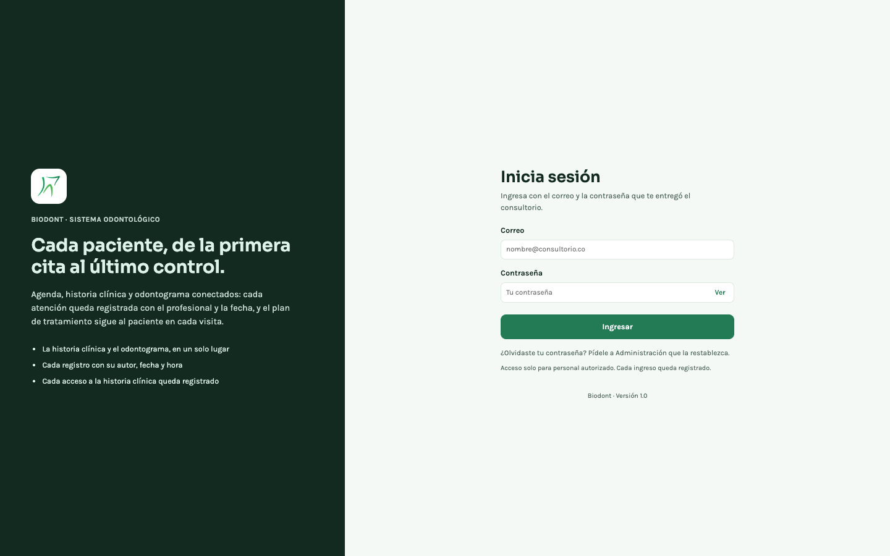
- Abra el navegador en la dirección que le indicó quien instaló el sistema. (En una instalación local,
en el equipo del consultorio suele ser
http://localhost:3000.) - Escriba su correo y su contraseña. Si no está seguro de lo que escribió, pulse Ver para mostrar la contraseña.
- Pulse Ingresar.
Cuando Administración le restablece la contraseña, al entrar el sistema le pide elegir una propia (Guardar y continuar) y lo devuelve a la pantalla de entrada: escriba la nueva y entre de nuevo. Después, la política de datos. A una cuenta de Administración nueva le toca además activar la verificación en dos pasos, antes de la política. Una cuenta creada por Administración con una clave que ella misma puso no obliga a cambiarla: si no quiere que quede una clave que otra persona conoce, pídale que use Contraseña sobre su fila.
Al entrar por primera vez —y de nuevo cada vez que el consultorio cambie su política de tratamiento de datos— el sistema le muestra la política y le pide Aceptar y continuar antes de dejarle trabajar. Es la misma para todo el equipo, Administración incluida: el sistema también trata sus datos (su firma, su registro de accesos).
Lo que eso significa en el trabajo de cada día está en Cuidar los datos de los pacientes.
El sistema bloquea los intentos durante 15 minutos. El bloqueo es de esa cuenta en ese equipo: si usted agota los cinco intentos en el computador del mostrador, sus compañeros sí pueden entrar desde ahí con su propio correo. Espere los 15 minutos o entre desde otro equipo.
Si pulsa Salir aparece una pregunta con dos opciones, porque no siempre se quiere lo mismo:
- Salir solo en este equipo — cierra su sesión aquí. Si la tenía abierta en la tablet o en otro computador, esas siguen funcionando. Es lo que conviene cuando termina en el mostrador y deja su consulta abierta.
- Salir en todos los equipos — cierra su sesión en todas partes. Es la opción que viene marcada, y la que hay que usar si sospecha que alguien más pudo quedar dentro con su cuenta.
Y Cancelar no cierra nada: vuelve a donde estaba.
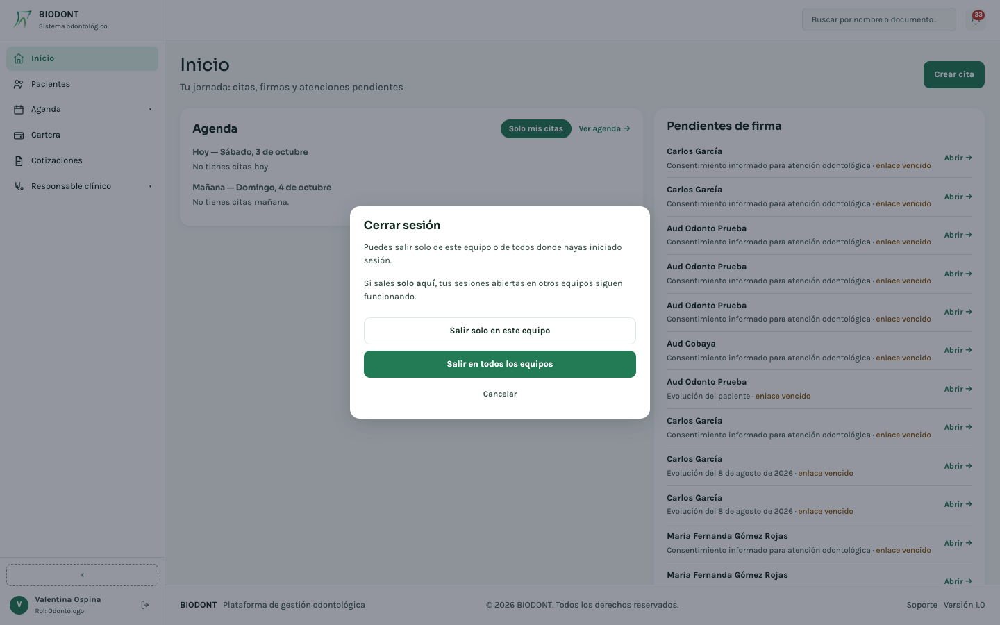
La verificación en dos pasos
Además de la contraseña, el sistema puede pedir un código de 6 dígitos que genera una app autenticadora en el celular (Google Authenticator, Microsoft Authenticator o cualquier otra; son gratuitas y funcionan sin internet). Así, aunque alguien sepa su contraseña, no entra sin el celular.
- Administración tiene que activarla: la primera vez que entra, el sistema la lleva a Verificación en dos pasos y no deja hacer nada más hasta terminar.
- Los demás roles pueden activarla desde Mi perfil → Seguridad, con Activar la verificación en dos pasos.
Para activarla:
- Escriba su contraseña y pulse Continuar.
- En la app del celular, elija añadir una cuenta y escanee el código QR. Si la cámara no lo lee, escriba en la app la clave que aparece debajo.
- Escriba el código de 6 dígitos que muestra la app y pulse Activar.
- El sistema muestra diez códigos de recuperación, una sola vez. Escríbalos en papel o guárdelos en un gestor de contraseñas, lejos del celular. Marque Ya los guardé en un lugar seguro y pulse Continuar.
Para entrar, después de la contraseña escriba el código que muestra la app en ese momento y pulse Entrar. Si no tiene el celular, pulse No tengo el celular: usar un código de recuperación: cada uno sirve una sola vez, y después el sistema lo lleva a Mi perfil para que vea cuántos le quedan.
Pídale a otro administrador que, en Administración → Usuarios, pulse Restablecer dos pasos en su fila: se cierran sus sesiones y, si es de Administración, vuelve a activarla al entrar. Nadie puede restablecer la suya propia. Si el consultorio tiene un solo administrador, lo hace el proveedor del sistema, después de comprobar quién lo pide.
Puesta en marcha
Lo que hay que hacer una sola vez, el primer día, antes de atender pacientes.
Administración hace los pasos 1 a 4 · el responsable clínico hace el 5 · cada profesional hace el 6
- Cambie las contraseñas que trae el sistema. La instalación crea un usuario administrador con una contraseña conocida. Mientras no se cambie, cualquiera que sepa cuál es puede entrar. Se hace desde Mi perfil.
- Cree un usuario por persona. En Administración → Gestión de usuarios → Nuevo usuario. Cada persona con su propio usuario, nunca uno compartido: todo lo que se registra queda a nombre de quien lo hizo, y con un usuario compartido esa constancia no vale nada.
- Designe al responsable clínico. En la misma tabla, columna Responsable clínico, pulse Designar sobre el odontólogo que asume ese papel. Solo puede serlo un odontólogo. Es quien puede consultar el registro de accesos. Se puede designar a más de uno (un suplente): designar a otro no retira al anterior, para retirarlo use Retirar. El cambio queda en el histórico.
- Cargue los precios del tarifario. El sistema trae el catálogo de procedimientos oficial (códigos CUPS), pero sin precios: los precios los pone cada consultorio. Sin ellos, los presupuestos salen en cero. Se hace en Administración → Tarifario de procedimientos.
- Habilite lo que el auxiliar puede registrar. En Actuaciones, el responsable clínico marca uno a uno los procedimientos que el auxiliar tiene autorizados. Sin esto el auxiliar no puede registrar una evolución ni subir un documento, y tampoco lee el examen, los diagnósticos, el pronóstico ni el riesgo: el sistema se lo rechaza o le dice «No tienes permiso para ver…». Las actuaciones nacen deshabilitadas. Vea Actuaciones.
- Cada odontólogo define su PIN de firma. Sin PIN no se puede firmar nada. Vea cómo se hace más abajo.
- Complete los datos del responsable del tratamiento. En Administración → Consultorio: nombre o razón social, identificación (NIT o documento), dirección, correo y teléfono. Sin ellos no se puede pedir la autorización de datos a ningún paciente: la ley exige que el documento identifique a quién responde por los datos, y el sistema no deja emitirlo con huecos.
- Decida si genera el RDA. El Resumen Digital de Atención (Res. 1888/2025) viene desactivado. Para generarlo, en Administración → RDA elija Sí en Generar el RDA y complete los datos del prestador (nombre, NIT, código de habilitación, dirección…): la pantalla enumera lo que falta. Biodont arma el documento de cada atención firmada; no lo envía a ningún sitio.
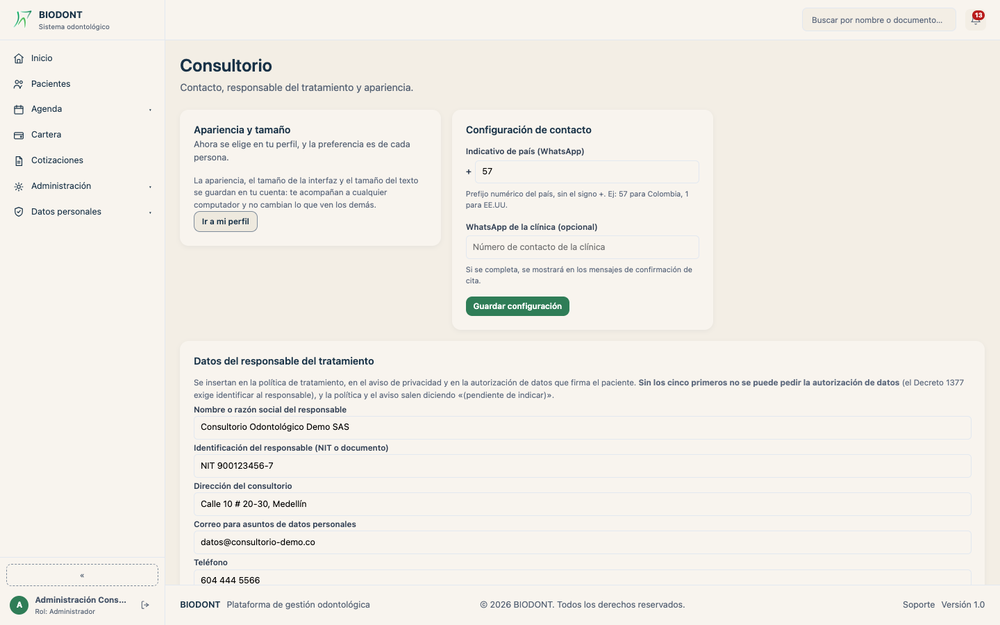
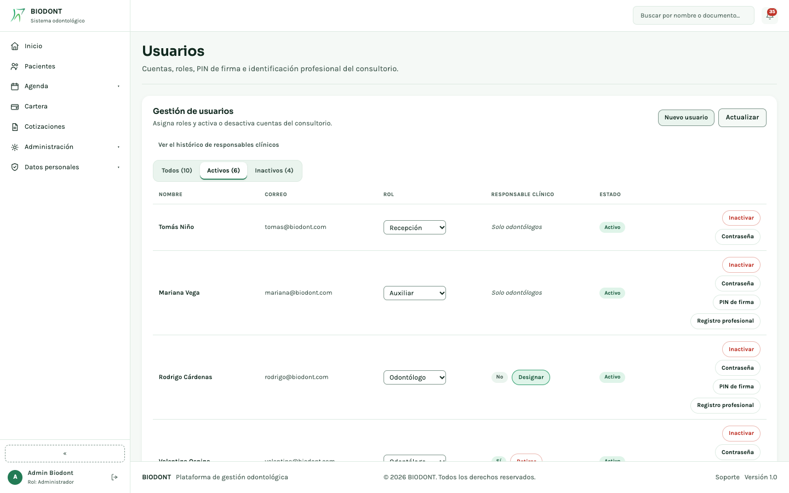
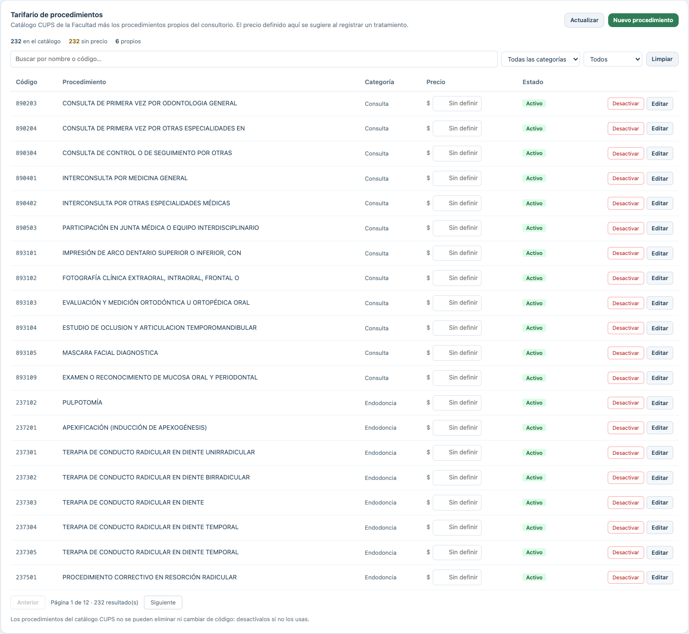
El PIN de firma
El PIN es la credencial del acto de firmar, y es distinto de la contraseña con la que entra al sistema. Son dos cosas separadas a propósito: si la contraseña sirviera para firmar, firmar y estar dentro del sistema serían lo mismo, y la firma no probaría nada.
- Administración entra a Administración → Gestión de usuarios y pulsa PIN de firma en la fila del profesional. El PIN que asigna es temporal.
- El profesional entra a Mi perfil y lo cambia por uno suyo. Necesita el PIN temporal para poder cambiarlo.
- Desde ese momento puede firmar.
Mientras el profesional no lo cambie, el sistema lo tiene por temporal y rechaza la firma. Es deliberado: si el PIN que puso Administración sirviera para firmar, Administración podría firmar en nombre del odontólogo.
El PIN tiene entre 6 y 12 dígitos. A los 5 intentos fallidos se bloquea, y hay que pedirle a Administración que lo restablezca.
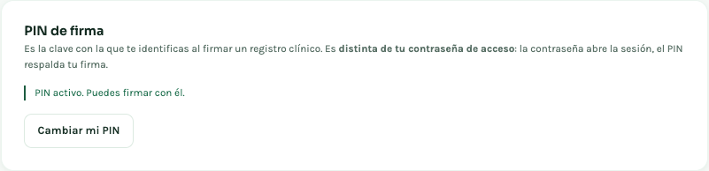
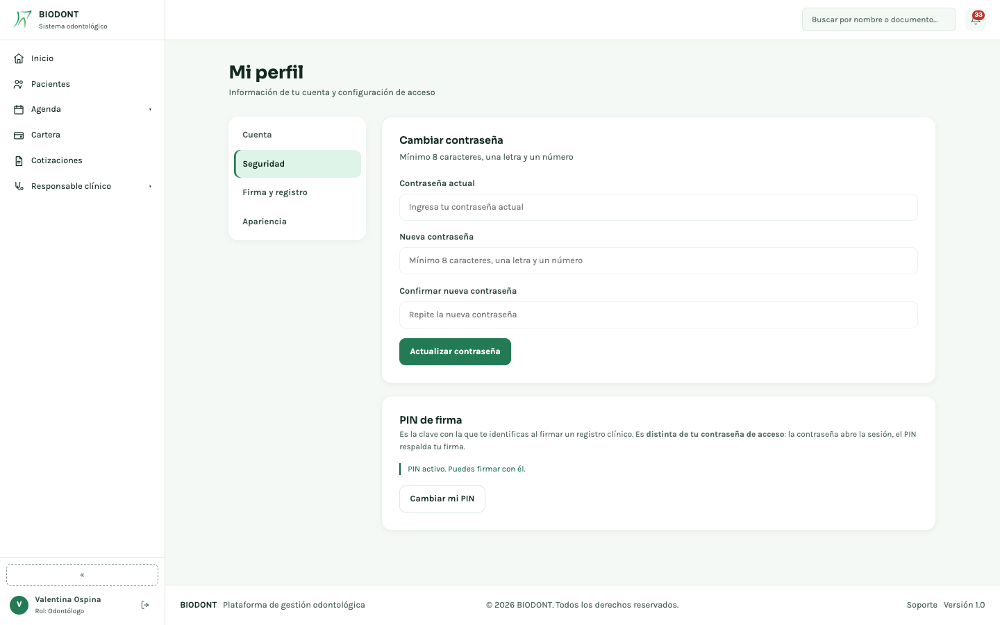
Ver mejor la pantalla
Administrador Odontólogo Auxiliar Recepción
Si le cuesta leer la pantalla, o trabaja con poca luz, o el reflejo le molesta, hay tres ajustes en Mi perfil → Apariencia. Son suyos: se guardan en su cuenta y le acompañan a cualquier computador del consultorio, sin cambiar lo que ven los demás.
- Apariencia — cambia solo los colores. Nada se mueve de sitio. Hay tres: Menta (la normal), Alto contraste (letra más marcada; para baja visión o pantallas con reflejo) y Nocturno (fondo oscuro, para consultar con poca luz).
- Tamaño de la interfaz — agranda todo a la vez: textos, botones y espacios, igual que el zoom del navegador.
- Tamaño del texto — agranda solo la letra, sin separar más las cosas. Úselo si le cuesta leer pero no quiere que quepan menos filas en pantalla.
- Abra Mi perfil pulsando su nombre, abajo a la izquierda.
- Elija la sección Apariencia.
- Pulse la opción que quiera. Se aplica al instante y se guarda sola: no hay botón de guardar.
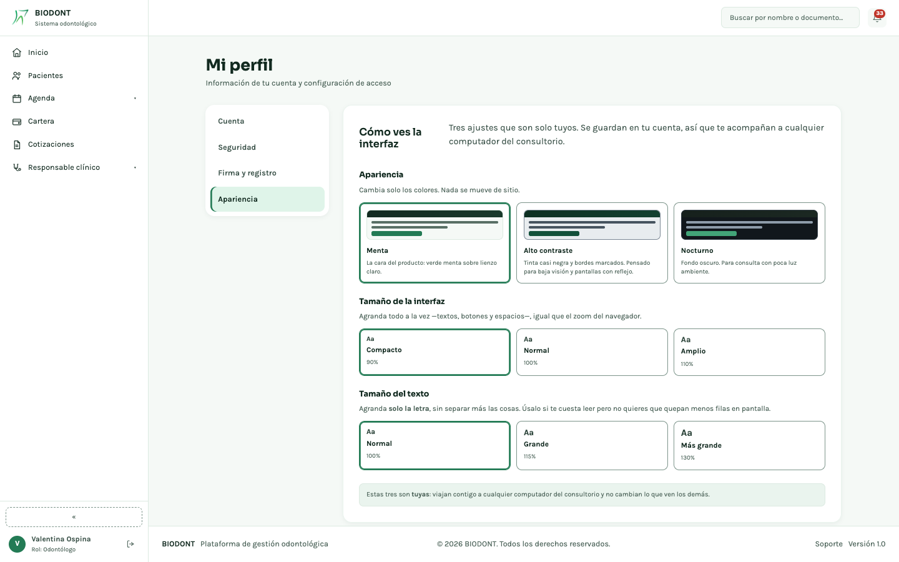
¿Le cambia la pantalla a los demás? No. Cada persona tiene la suya, aunque compartan el mismo computador — el del mostrador o la tablet.
¿Se pierde al entrar desde otro equipo? No. Va con su cuenta: entre donde entre, la interfaz aparece como usted la dejó.
Llega un paciente nuevo
Recepción Auxiliar Odontólogo Administración
Antes de registrar a nadie, búsquelo: escriba su documento en el buscador de arriba. Si ya está, no lo cree otra vez — un paciente duplicado parte su historia en dos.
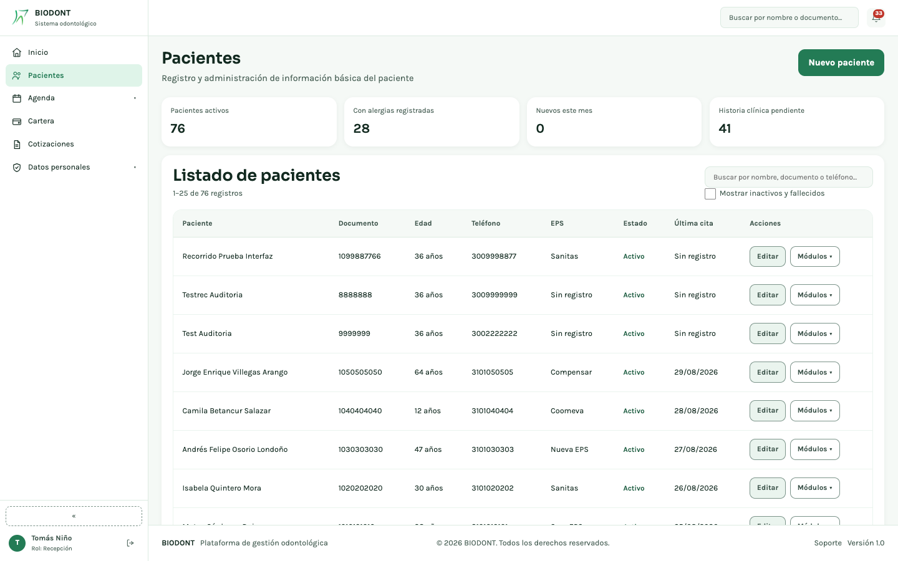
- Pulse Nuevo paciente.
- Llene los tres campos obligatorios, marcados con asterisco: Nombres, Apellidos y Documento. Si marca Registrar nombres y apellidos por separado, escribe primer y segundo nombre y primer y segundo apellido, y «Nombres» y «Apellidos» se forman solos: es como los pide el RDA.
- Ponga la Fecha de nacimiento. El sistema calcula la edad solo y la muestra debajo del campo — no hay que escribirla.
- Complete teléfono, correo, dirección y EPS si los tiene. Se pueden añadir después.
- En Datos demográficos registre, si los conoce, el Sexo biológico, la Nacionalidad y el país y la zona de residencia; en Colombia, además el departamento y el municipio, y fuera de Colombia la ciudad. Lo que no se sepa se deja en Sin registrar: el sistema no supone ningún valor.
- Pulse Guardar paciente.
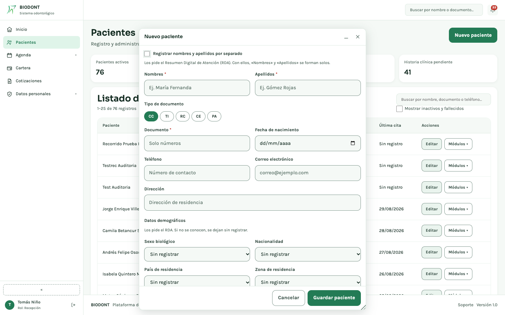
Es una nota de texto libre y solo la ven y la escriben quienes ven lo clínico (Odontólogo Auxiliar): Recepción no lo tiene en su formulario, que solo ofrece «Observaciones administrativas». La alergia que hace saltar el aviso al diagnosticar y al recetar se registra en la historia clínica, con su agente y su reacción. Vea Registrar una alergia.
Escribir «Penicilina» aquí no alerta a nadie.
Pertenencia étnica y discapacidad
Odontólogo Auxiliar — Recepción y Administración no los ven
Son datos sensibles que pide la Resolución 866, y el sistema los trata como dato clínico: solo los ven y los escriben el odontólogo y el auxiliar, en Editar de la ficha. Responder es voluntario y no cambia la atención.
- Si el paciente no quiere contestar, marque Prefiere no responder. No es lo mismo que «Ninguna» ni que «Sin discapacidad», y el sistema lo guarda aparte.
- Lo que nadie ha preguntado queda en Sin registrar.
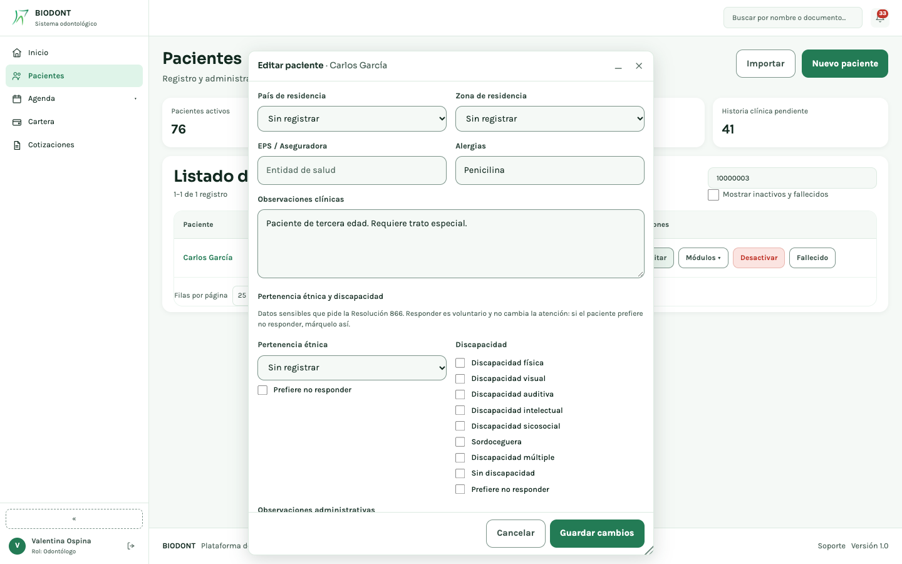
La Ley 1581 exige la autorización del paciente para tratar sus datos. Conviene recogerla en la admisión, el mismo día. Vea Documentos que firma el paciente.
Buscar un paciente para agendar o cobrar
Recepción Auxiliar Odontólogo Administración
En cuatro sitios hay que elegir un paciente: el buscador de la barra superior, la nueva cita, la cartera y el aviso dirigido a un paciente. Los cuatro funcionan igual: se escribe para acotar. Al hacer clic en el buscador puede aparecer una lista corta con los primeros pacientes; si el suyo no está, escriba su nombre o documento.
- Escriba parte del nombre, el apellido o el documento. Bastan tres o cuatro letras.
- Espere un instante: la búsqueda la hace el servidor sobre todos los pacientes.
- Pulse el que corresponda. Para cambiarlo, en la nueva cita y en el aviso pulse la ✕ y busque otro; en el buscador de la barra superior, vacíe la casilla (o pulse Escape) y escriba otro.
Con el teclado: las flechas ↓ y ↑ recorren la lista, Enter elige el resaltado (o el único que haya) sin enviar el formulario, y Escape cierra la lista sin elegir.
La lista enseña unos pocos resultados a la vez. Cuando hay más coincidencias de las que caben, lo dice con esa frase. No significa que falten pacientes: significa que su búsqueda es amplia. Escriba un poco más —el apellido completo, o el documento— y la lista se acorta hasta el que busca.
La búsqueda no distingue tildes: «Gomez» encuentra «Gómez».
Compruebe primero que no esté inactivo: estos buscadores solo ofrecen pacientes activos (el de vincular a una persona en Solicitudes de datos sí muestra también los inactivos, marcados «(inactivo)», porque se puede pedir sobre registros históricos). Si tampoco está en Pacientes, es que no está registrado — vea Llega un paciente nuevo. Y si la lista dice «No se pudo consultar la lista de pacientes», eso no es «no existe»: es un fallo de conexión, y hay que reintentar.
Agendar y reprogramar una cita
Recepción Auxiliar Odontólogo Administración
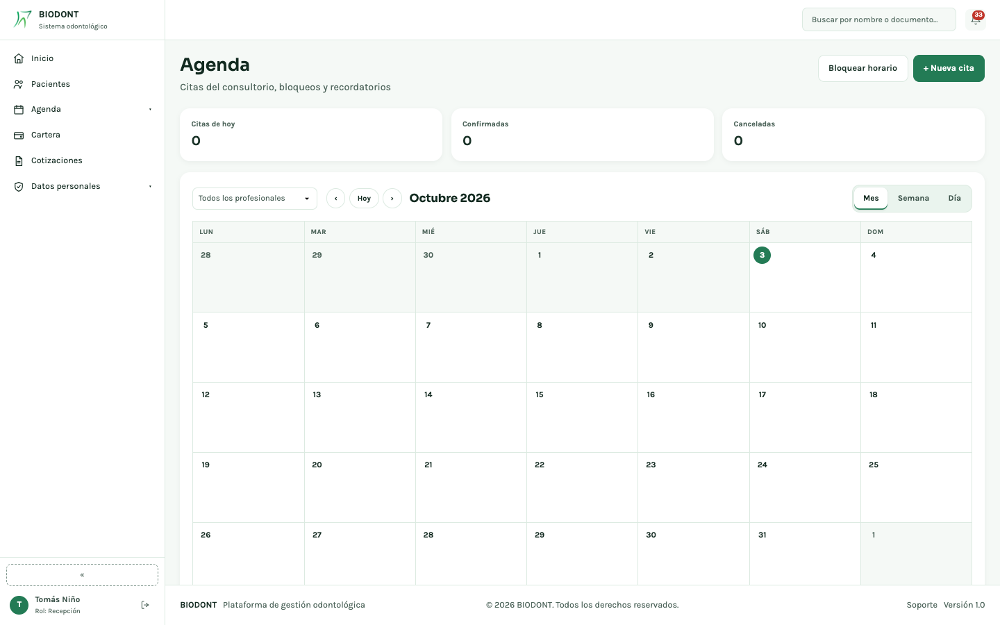
Agendar
- En el menú lateral abra Agenda y entre a Citas; pulse el botón de nueva cita.
- Busque el paciente: escriba parte del nombre o el documento y elíjalo de la lista. No es un desplegable con todos los pacientes — se busca escribiendo. Ver Buscar un paciente para agendar o cobrar.
- Elija el profesional, la fecha y la hora.
- Elija el tipo de atención: Valoración, Limpieza, Control o Urgencia. Son los cuatro valores que admite el sistema.
- Escriba el motivo — es lo que verá el profesional al abrir su agenda, y también Recepción en el Inicio. Es el motivo de la cita, en pocas palabras: no escriba diagnósticos ni datos clínicos.
- Guarde.
Cada cita ocupa un tiempo (el del tipo de atención, que se puede cambiar al agendar). Si esa franja se cruza con otra cita del paciente o con otra del profesional, o con un horario bloqueado, el sistema no la deja guardar y lo dice, por ejemplo: «El profesional ya tiene una cita a las 10:00 que se cruza con ese horario». Dos citas seguidas, una al terminar la otra, sí se pueden guardar.
Reprogramar
No hay que cancelar y volver a crear: la cita se mueve y conserva su historia.
- Busque la cita en la agenda y pulse Reprogramar.
- Indique la nueva fecha y hora (y, si cambia, la duración y el profesional). La ventana no pide motivo del cambio: la Nota para la agenda es opcional y sirve para dejarlo escrito.
- Guarde. El sistema vuelve a comprobar que no choque con otra cita.
Recordar la cita o el control por WhatsApp
Si el paciente tiene la autorización, al guardar una cita aparece Enviar recordatorio por WhatsApp →; en el Inicio, en Controles por agendar, Recordar por WhatsApp; y en la ventana de una cita, en Recordatorio, Enviar por WhatsApp. El sistema abre WhatsApp con el mensaje escrito y lo envía usted.
- Solo se ofrece si la autorización de datos vigente del paciente incluye el contacto administrativo. Si no la tiene, o no autorizó ese contacto, al guardar la cita no aparece nada: abra la cita en la ventana del día y, en Recordatorio, la pantalla lo dice y propone recordarle por llamada o en persona. Use entonces Anotar que se llamó (o Anotar SMS).
- El mensaje lleva la fecha (y la hora, si hay cita), nunca el motivo clínico.
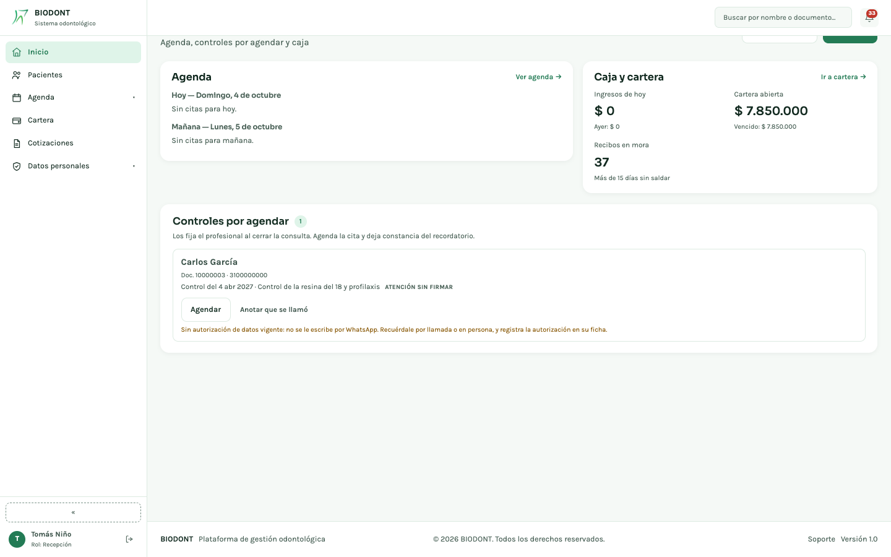
Una cita Atendida es un hecho ya ocurrido y moverla cambiaría cuándo se atendió al paciente. Una Cancelada se vuelve a agendar, que es otra decisión. Solo se reprograman las que están Programada o Confirmada, y siempre a una fecha futura.
Abrir y llenar la historia clínica
Odontólogo abre, llena y guarda · Auxiliar guarda el motivo y los antecedentes de una historia ya abierta, no los datos personales · Administración la ve sin el detalle clínico
La historia clínica es una sola por paciente y se va completando con el tiempo. No se crea una nueva en cada visita: lo que se registra por visita es la atención.
- Abra el paciente y entre a Historia clínica (en la lista de pacientes, el menú Módulos de su fila la llama Historia).
- Arriba están las pestañas: Datos personales, Motivo de consulta, Antecedentes, Higiene oral, Enf. odontológicas, Fórmulas médicas y Evolución. Un punto junto al nombre de una pestaña avisa de cambios sin guardar.
- Los datos personales se guardan con Guardar datos. Lo clínico se guarda con Guardar cambios, que dice Guardar como versión N cuando lo que cambia son los antecedentes. Guardar cambios solo se activa después de marcar «El paciente declara que la información suministrada es verídica».
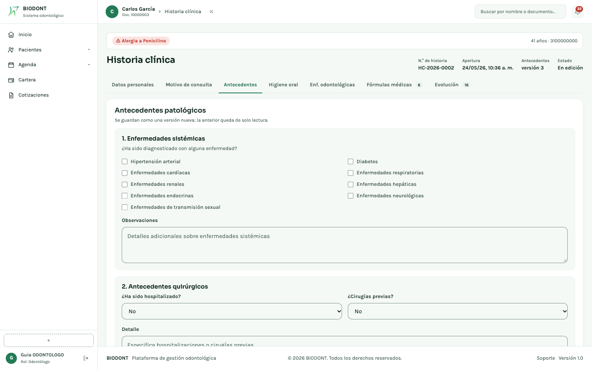
Guardar datos se activa cuando hay algo cambiado y guarda solo los datos personales; no toca los antecedentes ni lo demás. Así, dos personas que trabajan en pestañas distintas no se pisan.
Los desplegables de antecedentes muestran «No» mientras nadie los haya llenado, porque solo ofrecen «No» y «Sí». Si usted solo escribe el motivo de consulta, esos antecedentes siguen sin diligenciar: solo se guarda un grupo (hábitos, embarazo, cirugías…) cuando usted lo cambia o cuando ya tenía datos. Si quiere dejar un «No» como respuesta, cambie otro dato de ese grupo: volver un «Sí» a «No» deja el grupo como estaba y no cuenta como un cambio.
El sistema conserva qué antecedentes conocía el profesional en cada momento. Por eso una atención firmada hace meses sigue mostrando los antecedentes de entonces y no los de hoy: así debe ser en un documento clínico.
Registrar una alergia
Odontólogo Auxiliar
Esta es la vía que hace saltar el aviso al diagnosticar y al recetar. Está dentro de la historia clínica, en la pestaña Antecedentes → 4. Alergias.
En un paciente recién registrado todavía no hay historia abierta, y sin ella no se puede registrar ninguna alergia. La sección lo dice —«Este paciente aún no tiene historia clínica abierta. Ábrela para registrar sus alergias.»— y, al odontólogo y a Administración, les ofrece el botón Abrir historia clínica. Púlselo: la historia queda abierta, con los antecedentes sin diligenciar (no «no tiene»), y las alergias ya se pueden registrar.
El auxiliar no abre historias: en lugar del botón, la sección le dice «Pídele al odontólogo o a Administración que la abra» y no le ofrece registrar alergias hasta que esté abierta; si intenta guardar el motivo, el sistema responde que «debe abrirla el odontólogo o el administrador». Pídale que la abra y siga.
- En ¿El paciente presenta alergias conocidas? elija la respuesta. Las cuatro opciones
significan cosas distintas y conviene no confundirlas:
- Sin diligenciar — nadie ha preguntado todavía. Es lo que trae por defecto.
- Sí — el paciente refiere alergias. Primero registre al menos una con + Registrar alergia (paso 2): si elige «Sí» antes, el sistema vuelve a «Sin diligenciar» y lo avisa.
- No — se preguntó y no tiene. No es lo mismo que «sin diligenciar».
- No sabe — se preguntó y el paciente no sabe.
- Pulse + Registrar alergia.
- Indique el agente (a qué es alérgico: penicilina, látex…), la categoría y la reacción que le produce.
- Guarde.
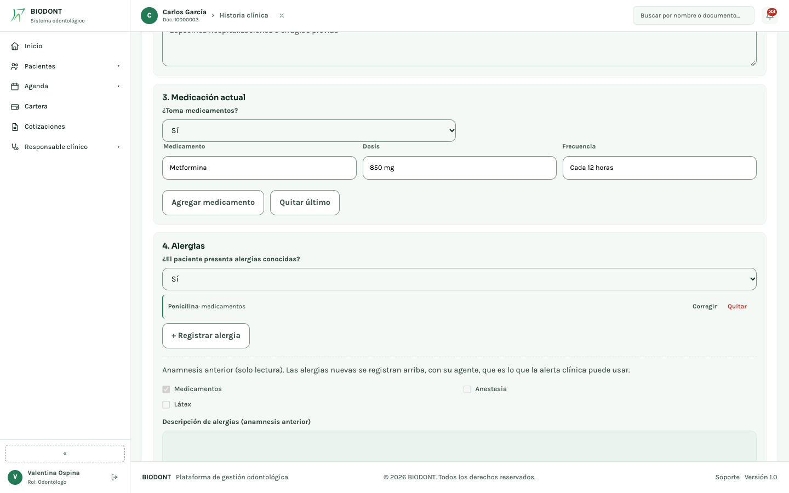
La alerta se construye con el agente. Escribir «es alérgica a varios antibióticos» en un campo de texto no produce ninguna alerta; registrar Penicilina como agente, sí.
Una vez registrada, la alergia aparece, con su agente, en la franja de condiciones que va arriba de todas las pantallas del paciente: Atención, Historia clínica, Odontograma, Periodontograma, Tratamientos, Presupuesto, Documentos y Archivos. Las alergias a medicamentos, anestésicos y látex (el de los guantes y el dique) son además alerta alta, en rojo, en el Resumen. Si la respuesta es No sabe, la franja lo dice: «Alergias: el paciente no sabe si tiene».
Si ya no corresponde: retirarla
Si una alergia se registró por error o resultó no ser tal, pulse Quitar junto a ella. El sistema pide el motivo (al menos 5 caracteres); escríbalo y pulse Sí, retirar (o Enter). La alergia no se borra: queda anulada con quién la retiró, cuándo y por qué, y deja de salir en la franja, las alertas y la atención. Si era la única, la respuesta vuelve a Sin diligenciar: retirar la última no equivale a afirmar que el paciente no tiene alergias. Cancelar (o Escape) la deja como estaba.
Si se equivocó al escribirla
Pulse Corregir en la alergia y arregle el agente, la categoría o la reacción. No la borre para volver a crearla: al corregir se conserva quién la registró y cuándo, y al borrar y recrear esos dos datos cambian.
Significa que esa alergia pertenece a una versión de antecedentes ya cerrada — se guardó una edición de la historia después de registrarla. Lo que consta en una atención ya firmada no se reescribe. Registre la corrección como una alergia nueva.
Atender y firmar la atención
Odontólogo crea, revisa, firma y cierra · Auxiliar registra lo que le corresponde, no revisa, ni firma ni cierra
La atención es lo que ocurre en una visita. La historia clínica es una sola y permanente; la atención es una por visita y no se sobrescribe nunca.
Para registrar la primera atención, su historia clínica tiene que estar abierta. Si no lo está, la pantalla lo dice —«Para registrar una atención hace falta abrir antes su historia clínica»— y ofrece el enlace Abrir la historia clínica. Ese enlace solo lleva a la historia del paciente: no la abre. La abre allí el odontólogo o Administración (ver Abrir y llenar la historia clínica); después se vuelve a la atención y ya se puede registrar. El auxiliar no abre historias.
Arriba se ven los cuatro pasos del ciclo —Sin firmar, Revisada, Firmada, Cerrada— y debajo cinco pestañas: Consulta, Evolución, Órdenes y remisiones, Archivos y Constancias y correcciones.
El auxiliar siempre puede abrir la atención y escribir el motivo de consulta. El examen clínico y el físico, los diagnósticos, el pronóstico y el riesgo los lee solo si el responsable clínico le habilitó al menos una actuación en Actuaciones. Si no, cada bloque dice «No tienes permiso para ver…» y aclara que eso no significa que esté vacío.
Registrar la atención
- Abra el paciente y entre a Atención.
- Pulse + Nueva (si el paciente todavía no tiene ninguna atención, el botón dice Registrar la primera atención). En la pestaña Consulta escriba el motivo de consulta y, si aplica, la enfermedad actual.
- Mientras haya algo sin guardar, abajo aparece una barra que lo avisa con su botón Guardar. Si sale de la pantalla sin guardar, el sistema pregunta.
- En Diagnóstico, pulse + Nuevo diagnóstico. Se abre una ventana aparte que se puede mover o minimizar sin perder lo escrito. Solo puede haber un diagnóstico principal; los demás se registran como relacionados.
- Debajo, Sugeridos por el odontograma propone diagnósticos con su código CIE-10 —y, cuando lo hay, el CIE-11— a partir de lo marcado. Solo se guarda lo que usted Confirmar: el sistema sugiere, el diagnóstico lo hace el profesional.
- En Plan de tratamiento aparecen los procedimientos pendientes del plan. Al terminar uno en esta visita, pulse Realizado en esta atención. Cada línea dice, entre paréntesis, los datos que deciden su código (por ejemplo «quirúrgica» o «provisional», o «sin decidir si es simple o quirúrgica» si falta) y su código CUPS, o sin CUPS si todavía no lo tiene: antes de marcarla, revise que lo que se hizo coincide.
- Añada los signos vitales si los tomó. Los antecedentes aparecen resumidos, en solo lectura: se editan en la historia clínica.
- En Próximo control elija un atajo (1 semana, 15 días, 1 mes, 6 meses) o una fecha, y el motivo. Recepción lo verá en su Inicio para agendarlo.
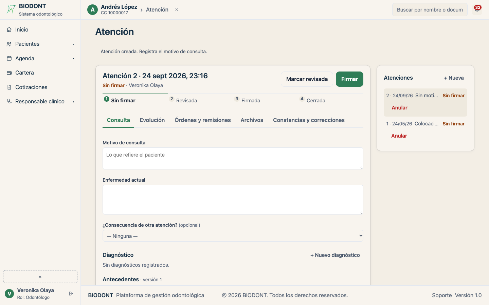
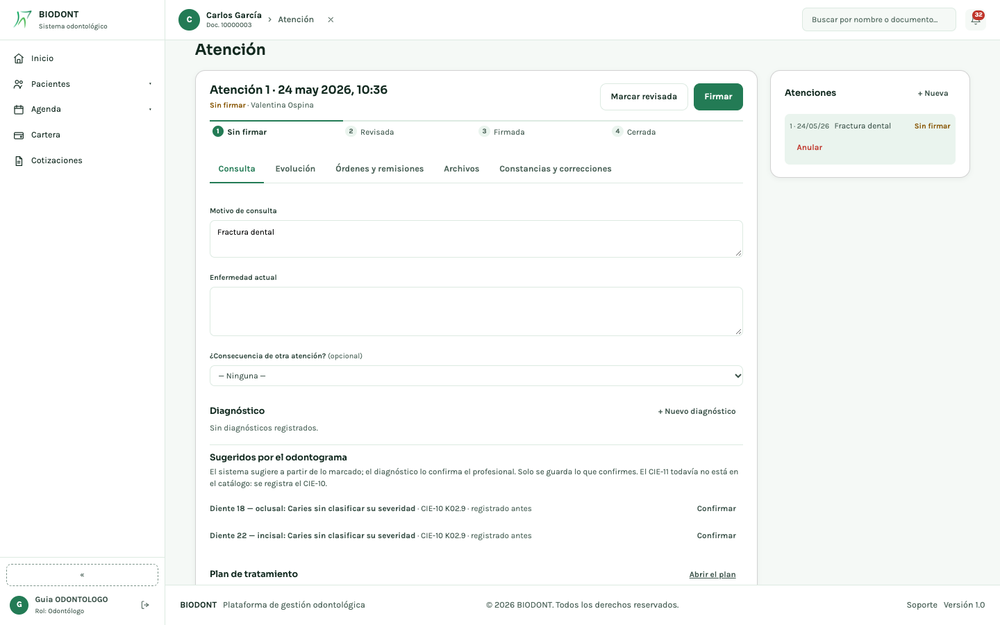
El examen físico
Odontólogo lo registra · Auxiliar solo lo lee, con alguna actuación habilitada
En la pestaña Consulta, Examen físico recorre las estructuras extraorales, intraorales y de función. En cada una pulse Normal o Alterado y, si está alterada, describa lo que ve. Debajo hay la apertura bucal (opcional) y la síntesis.
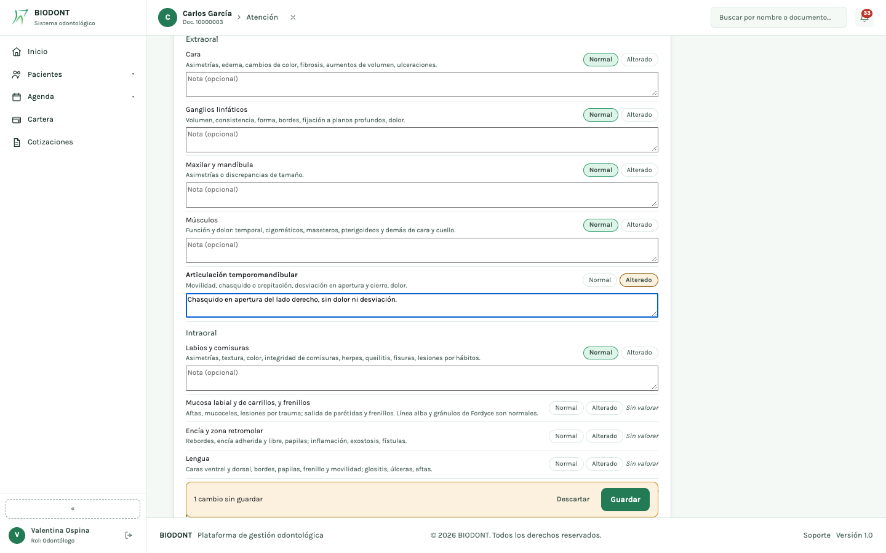
Datos para el RDA
Bajo el diagnóstico, Datos para el RDA pide la consulta (CUPS), el tipo del diagnóstico principal y la causa externa. No traen valor por defecto: los marca quien atiende.
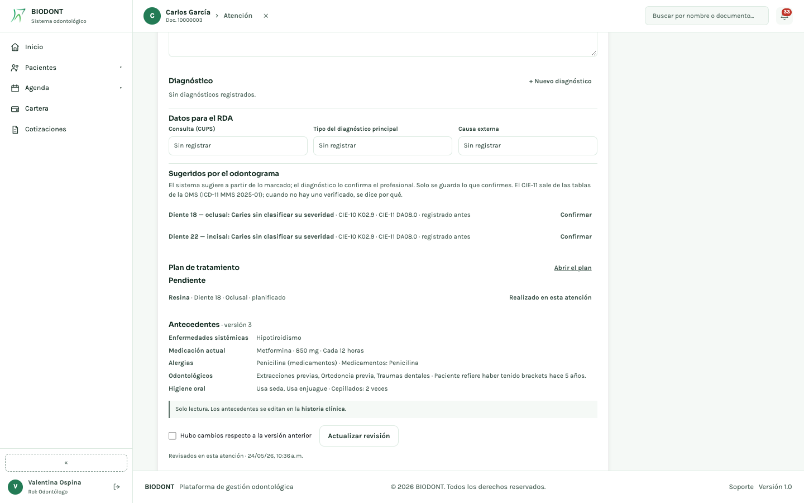
Control de placa (O'Leary)
Odontólogo Auxiliar
- En Control de placa, pulse + Registrar y elija la dentición.
- Pulse cada superficie con placa. Un segundo toque la marca no examinable, y un tercero la deja sin placa. Un diente que no está se marca ausente pulsando su número, y no cuenta.
- La vista previa da el índice mientras marca. Pulse Guardar control de placa.
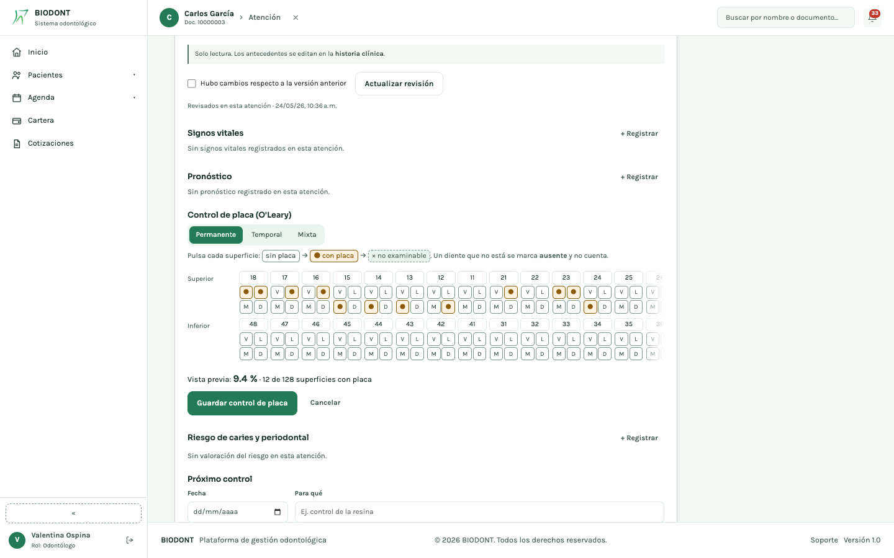
Riesgo de caries y periodontal
Odontólogo la registra · Auxiliar solo la lee, y solo si el responsable clínico le habilitó alguna actuación (Actuaciones)
- En Riesgo de caries y periodontal, pulse + Registrar.
- Caries (ICCMS): marque los factores de riesgo, el riesgo del paciente y su actividad de caries. Los factores marcados siempre alto imponen riesgo alto.
- Periodontal (PRA), para pacientes en terapia de soporte: pulse Tomar del periodontograma y del odontograma para prellenar el sangrado, las bolsas y los dientes perdidos; el aviso dice de dónde sale cada cifra y qué no se pudo tomar. El sangrado no se trae si el periodontograma tiene sitios sondados sin evaluar (por ejemplo, «cobertura incompleta: 72 de 168 sitios evaluados»): un porcentaje sobre la mitad de la boca no es el de la boca, así que el aviso lo dice y hay que escribirlo. Complete el resto y guarde.
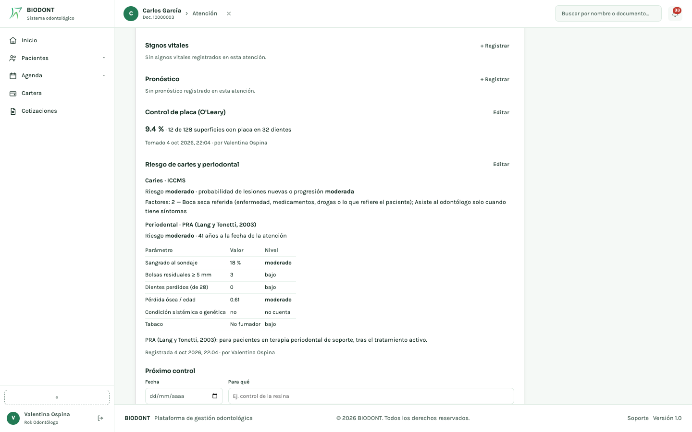
Registrar lo que se hizo: la evolución
La evolución de la sesión se escribe dentro de la atención, en la pestaña Evolución, y se firma con ella. En la historia clínica y en Tratamientos solo se consulta.
- Pulse + Registrar evolución.
- Elija la pieza (o marque No aplica), el tratamiento en curso si lo hay, y escriba lo que se hizo y lo que queda por hacer en la próxima sesión.
- El auxiliar además indica la actuación autorizada que ejecutó.
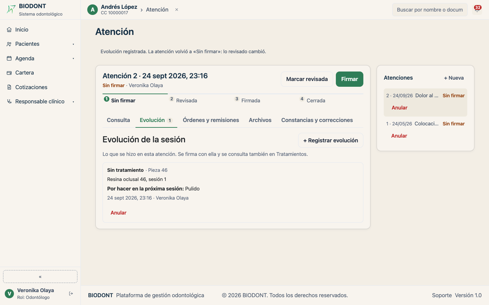
Corregir un diagnóstico
Si escribió mal un diagnóstico, pulse Corregir junto a él y arregle el texto, el código o el tipo. No use «Quitar» para volver a añadirlo: al corregir se conserva quién lo registró y cuándo, y al borrar y recrear esos dos datos cambian — en un documento que se conserva quince años, eso no es lo mismo.
Si después de Marcar revisada se añade o cambia algo —un diagnóstico, una evolución, los signos vitales— el sistema la devuelve a Sin firmar y lo dice. La revisión era de otro contenido; hay que revisarla de nuevo antes de firmar.
Firmar
Firmar cierra el contenido: a partir de ahí no se puede editar, y el sistema guarda una huella —que incluye las evoluciones y el próximo control— para comprobar después que nadie lo alteró.
- Pulse Marcar revisada cuando el contenido esté completo.
- Pulse Firmar. Se abre un resumen de lo que va a firmar, con avisos de lo que falta (por ejemplo, signos vitales sin tomar). Los avisos no impiden firmar.
- Marque Revisé el contenido de esta atención., escriba su PIN de firma —no su contraseña— y pulse Firmar.
Una atención la revisa, la firma y la cierra su autor: quien la abrió. A cualquier otra persona la pantalla le dice quién la creó y no le ofrece Firmar ni Cerrar atención. Si cambió el profesional que atiende (por ejemplo, la abrió alguien que ya no está ese día), el responsable clínico pulsa Reasignar autor…, elige el odontólogo en Nuevo autor y pulsa Reasignar. Solo se reasigna lo que aún no está firmado, y queda constancia de quién lo hizo.
Si el consultorio genera el RDA, la atención no se firma sin la consulta (CUPS), la causa externa y el tipo del diagnóstico principal: al firmar, el sistema dice cuál falta y no firma.
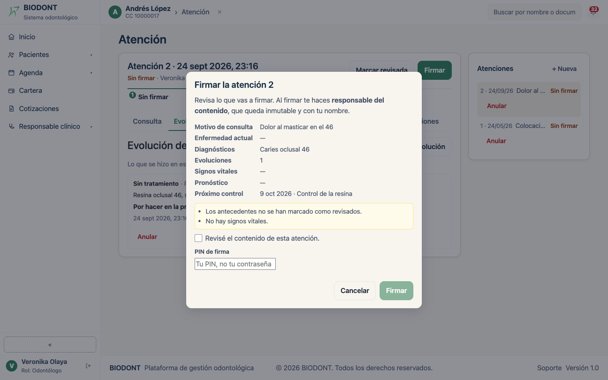
Después de firmar
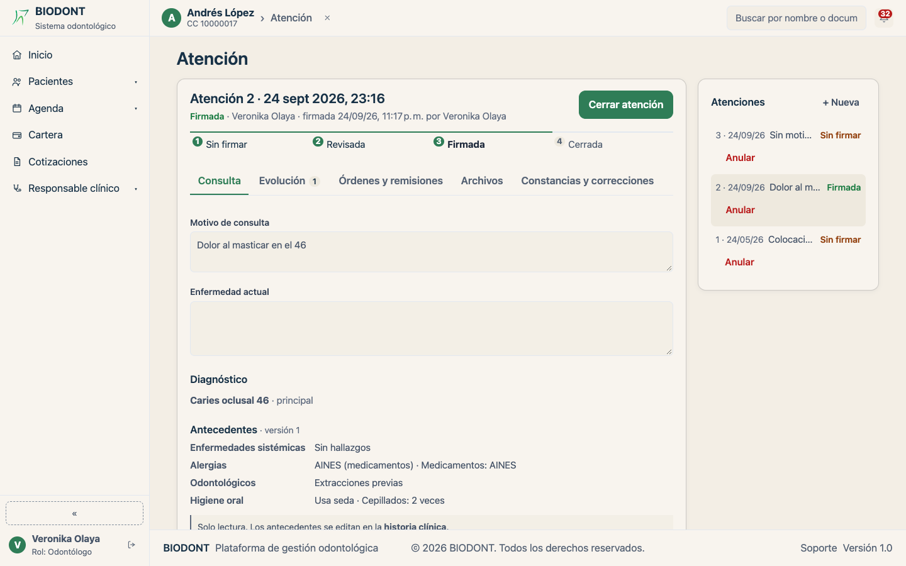
| Botón | Para qué sirve |
|---|---|
| Cerrar atención | Da la visita por terminada. Es el último paso del ciclo. |
| Agregar corrección | Añade una adenda, en la pestaña Constancias y correcciones. Lo firmado no se toca: la corrección se suma después, fechada y firmada, como manda la norma para un documento clínico. |
| Imprimir (PDF) | Descarga el impreso de la atención con todo lo registrado, sus firmas y su huella. Solo lo obtiene quien puede ver todo su contenido: a un rol que no ve alguna parte (el auxiliar sin actuaciones habilitadas, por ejemplo) el botón aparece desactivado y, al pasar el cursor, dice por qué. Si hay cambios sin guardar, guarde antes: el impreso es lo guardado. |
| Comprobar integridad | Verifica que el contenido firmado no ha sido alterado. Si algo cambió por fuera del sistema, lo dice. |
| Anular | Deja la atención sin efecto dejando constancia de quién la anuló y por qué. No la borra. |
Las atenciones anuladas no salen en la lista; para verlas, marque Ver anuladas. Una anulada se abre solo para leer, con su fecha y su motivo de anulación, y se puede imprimir como constancia (el impreso lo obtiene quien puede ver la atención entera).
Nunca se reescribe lo firmado. Si lo firmado pudiera cambiarse, la firma no probaría nada — y es justo lo que le da valor legal al documento.
Fórmulas, órdenes de estudio y remisiones
Fórmula: Odontólogo — solo él · Órdenes y remisiones: Odontólogo Auxiliar
Tres documentos que el profesional entrega al paciente o a otro servicio. Ninguno se borra: se anula dejando constancia de quién y por qué.
La fórmula médica
Vive en la historia clínica del paciente, no en la atención.
- Abra el paciente → Historia clínica → pestaña Fórmulas médicas.
- Pulse + Nueva fórmula. Arriba de la ventana el sistema recuerda las alergias registradas (o avisa de que se desconocen): léalas antes de recetar.
- Escriba el diagnóstico o motivo. Cada medicamento lleva nombre, dosis y frecuencia (sin esos tres no se guarda) y, si quiere, la duración. + Agregar medicamento suma otra fila y Quitar la retira. Las indicaciones generales son libres.
- Pulse Guardar fórmula.
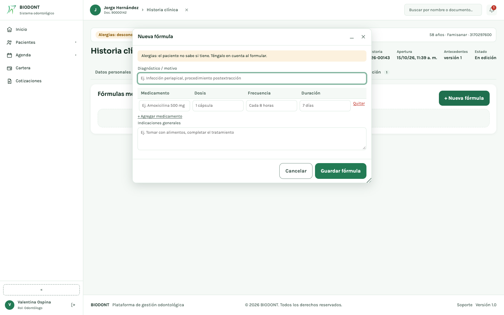
La fórmula guardada queda Vigente en la lista, con quien la hizo. Desde ahí se descarga en PDF con Descargar PDF. Anular solo se ofrece a quien la prescribió, y pide un motivo de al menos cinco caracteres: la fórmula anulada se queda en la lista, marcada, con su motivo.
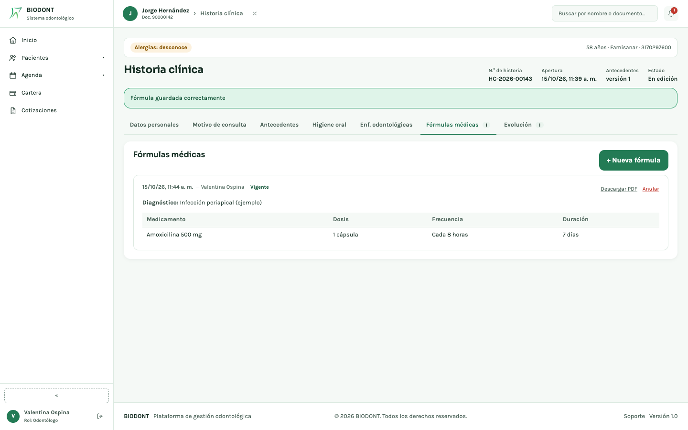
Órdenes de estudio y remisiones
Viven en la atención, en la pestaña Órdenes y remisiones.
- Abra la atención → pestaña Órdenes y remisiones.
- Para pedir un estudio pulse + Pedir estudio, escriba el estudio (por ejemplo «Radiografía panorámica») y, si quiere, notas. Guardar orden. La orden queda Pendiente.
- Cuando llega el resultado, súbalo primero en Archivos y pulse Resolver en la orden: elija el documento con el resultado y, si el documento no lo dice por sí solo, escriba su interpretación. La orden pasa a Resuelta.
- Para derivar al paciente pulse + Remitir a especialista: la especialidad y el motivo son obligatorios; los hallazgos relevantes, el diagnóstico y la pregunta al especialista, opcionales. Cuando el especialista responde, Registrar resultado en la remisión.
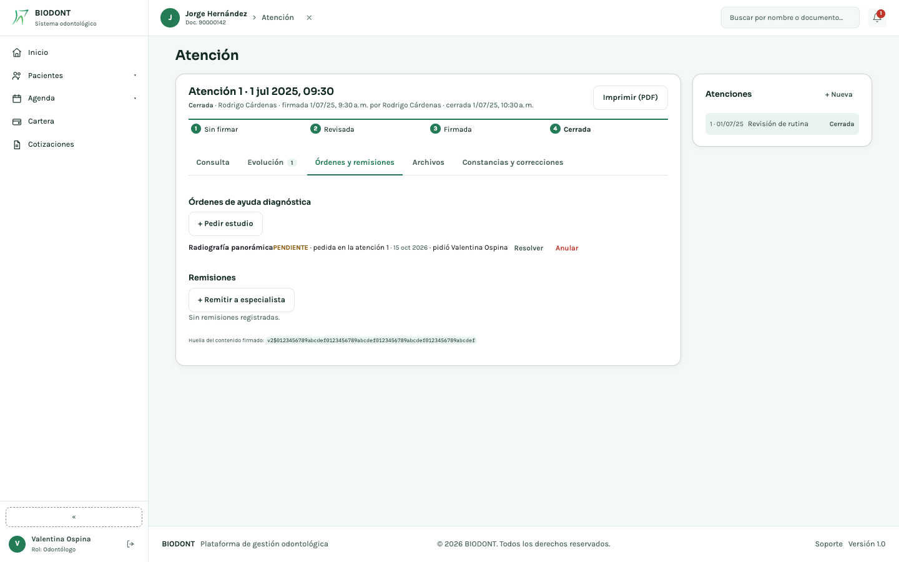
Una orden o una remisión sí se puede pedir con la atención cerrada: no es parte de lo que se firmó, así que no altera la atención y queda ligada a ella. Lo ya firmado y cerrado no cambia; lo que se corrige de la atención sigue yendo por adenda.
La orden y la remisión anuladas se conservan con su motivo, como el resto de lo clínico (15 años), aunque la lista de la atención solo muestra las vigentes: si todas están anuladas, dice «Sin órdenes registradas». Como en la fórmula y en la evolución, anular pide un motivo de al menos cinco caracteres: «Sí, anular» no se activa hasta escribirlo.
Marcar el odontograma
Odontólogo Auxiliar
El odontograma es clínico: cada cara del diente se registra con el código ICDAS (dos dígitos: qué hay en la cara y su caries), y cada diente con su presencia, su estado pulpar y sus rehabilitaciones. Ningún hallazgo es solo un color: cada marca lleva su significado escrito.
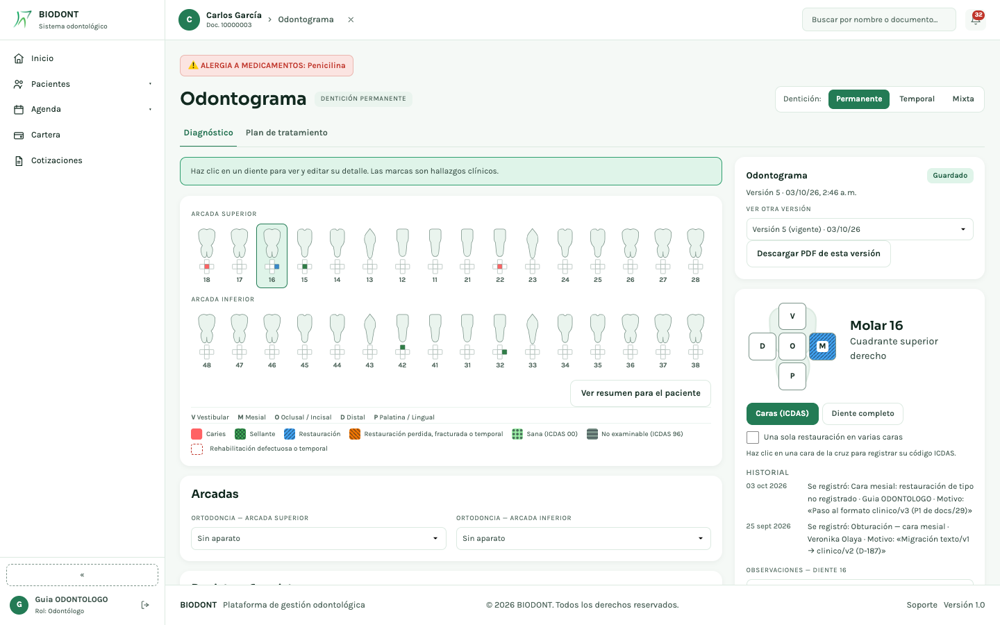
- Abra el paciente y entre a Odontograma.
- Elija la dentición arriba a la derecha (permanente, temporal o mixta) antes de empezar a marcar.
- Haga clic en un diente. A la derecha aparece con su cruz de caras (V, M, O, D, P).
- En Caras (ICDAS), haga clic en una cara y registre qué hay en ella (primer dígito: sin restauración, sellante, restauración…), su caries (segundo dígito), la raíz expuesta y otros hallazgos (fractura, atrición, erosión…). Si la cara no se pudo examinar, márquela como no examinable. Para una restauración que abarca varias caras, marque Una sola restauración en varias caras.
- En Diente completo registre la presencia (presente, o ausente con su causa: por caries, agenesia, no erupcionado…), el número de raíces, el diagnóstico pulpar —uno solo vigente por diente—, el periápice, el tratamiento pulpar que ya tiene y las rehabilitaciones (corona, prótesis…).
- Lo marcado se guarda solo a los pocos segundos y aparece abajo, en Registro.
Un diente que ya tiene caras registradas no se puede pasar a ausente: el odontograma no lo hace, no pide un motivo y no borra nada, sino que avisa «El diente N tiene caras registradas: anúlalas antes de registrarlo …». Primero se anulan las caras (con su motivo) y después se registra la ausencia. Lo mismo vale para la pulpa y para las rehabilitaciones que no caben en un diente ausente.
En Diente completo, Número de raíces (una a cuatro, o «Sin registrar») sirve para elegir el CUPS de la endodoncia y de la exodoncia de ese diente en el plan: con las raíces registradas, el código de la endodoncia sale «sugerido» en vez de «por confirmar»; el de la exodoncia, cuando además se elige si es simple o quirúrgica (ver los candidatos CUPS). Regístrelo cuando lo vea en la radiografía, sobre todo en el 14 y el 24, que tienen a menudo dos raíces y a veces una; también se puede en un diente incluido. Quitarlo pide motivo, como cualquier anulación. Si el diente pasa después a ausente (por ejemplo, tras la exodoncia), las raíces se conservan: son del diente que hubo. En un diente ausente el campo solo aparece si ya tenía las raíces registradas: no se registran de nuevo.
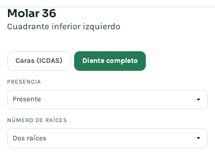
Debajo de la rejilla, la leyenda nombra cada marca con su color, el patrón dicho con palabras, dónde va y cómo se ve, así que se entiende también impresa en gris. Hay tres clases de marca, además de la cruz del diente ausente:
- Relleno de la cara: el estado de cada cara. Caries y restauración con caries, relleno macizo; sellante, rayas cruzadas; restauración, rayas diagonales /; restauración perdida, fracturada o temporal, y fractura, desgaste o fisura, rayas diagonales \; sana (ICDAS 00), puntos; no examinable (ICDAS 96), rayas horizontales. La corona pinta todas las caras que cubre con rayas verticales, igual que en el PDF.
- Silueta del diente rellena: la corona, el implante y las piezas de una prótesis rellenan la silueta entera del diente, cada una con su color. Por eso la corona sale dos veces en la leyenda: una por sus caras (rayas verticales) y otra por la silueta. Si la rehabilitación es defectuosa o temporal, el contorno del diente se dibuja en rojo y discontinuo.
- Dibujo en la raíz: el tratamiento pulpar se dibuja dentro del diente, y la forma dice cuál es. La endodoncia es la cámara y el conducto completo con trazo continuo; la pulpectomía, la cámara y el conducto completo con trazo discontinuo; la pulpotomía, solo la cámara.
Un diente ausente lleva una cruz encima. La leyenda de diente completo solo muestra las marcas que tiene el paciente: explica lo que se ve, no el catálogo entero.
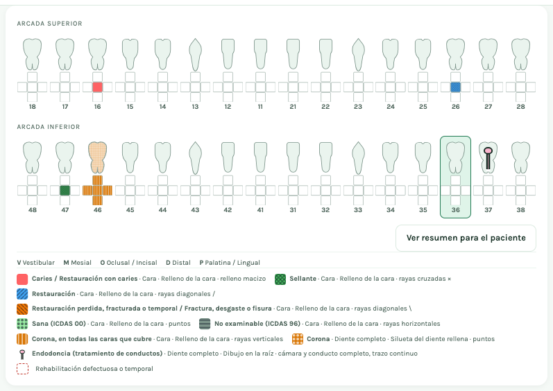
Cuando se quita un hallazgo sin poner otro en su lugar, el sistema pide el motivo de la anulación (mínimo 5 caracteres). No se borra: queda en el Historial del diente, con quién lo anuló y por qué.
El plan de tratamiento
La pestaña Plan de tratamiento es una lista de procedimientos: cada uno con dónde se hace (unas caras, un diente, una prótesis o la boca completa), su código CUPS si lo tiene y su estado. Para poner el CUPS no hace falta saberse el código: al entrar en el campo vacío se ofrecen los candidatos de ese procedimiento en ese diente, y también se puede escribir el nombre del procedimiento («resina», «exodoncia», «profilaxis») o parte del código y elegir de la lista con el ratón o con las flechas y Enter. Solo se guarda un código del catálogo activo del consultorio. Va aparte del diagnóstico a propósito: la norma exige que lo encontrado y lo que se va a hacer no se confundan.
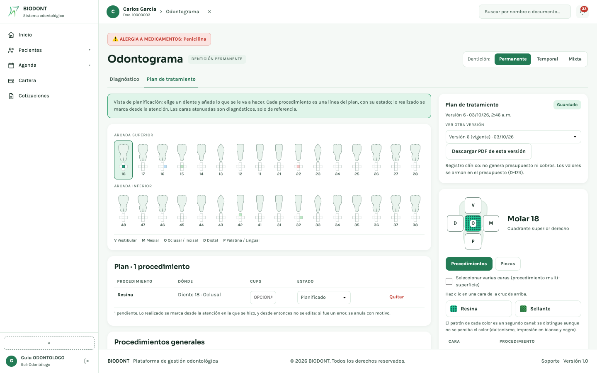
- En Plan de tratamiento, elija un diente y añada el procedimiento (por cara, en Procedimientos, o del diente entero, en Piezas). Lo de toda la boca —profilaxis, blanqueamiento…— está en Procedimientos generales; ahí también está la aparatología fija para ortodoncia.
- Cada procedimiento queda como una línea de la lista, Planificado. Mientras no se haga, puede pasarlo a En curso o Quitar.
- Lo realizado se marca desde la atención en la que se hizo (ver abajo). Desde entonces la línea no se edita: si fue un error, se anula con motivo.
El plan ofrece una lista corta de procedimientos. Para cualquier otro, en cada sitio donde se añade —las caras de un diente, el diente completo, varios dientes y los procedimientos generales— está Otro procedimiento (CUPS): al pulsarlo se busca por código o nombre en el catálogo del consultorio y se elige uno. Sin código no se añade. La línea se nombra por el procedimiento elegido, con su código, y en el dibujo lleva un patrón propio (cuadrícula recta). Si después se cambia el nombre en el tarifario, lo planeado conserva el de entonces.
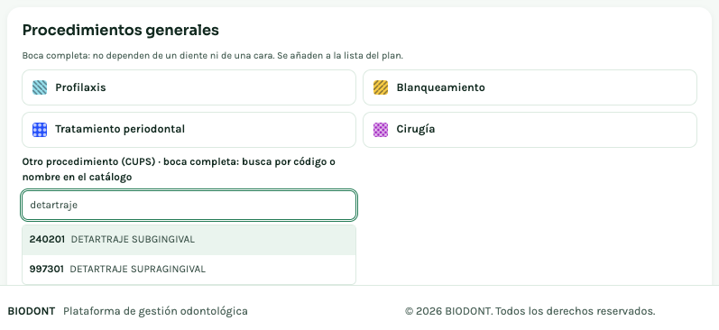
Tres procedimientos fijos más, cada uno con su color y su patrón en pantalla, y el código CUPS que el sistema sugiere. En el PDF no se ven igual: solo la incrustación se dibuja con su tablero (y entra en la leyenda); la remoción sale como un número sobre el diente, explicado en la leyenda («Remoción de retenedor intrarradicular»); y la aparatología no se dibuja, solo aparece en la tabla de procedimientos planificados, en texto («Boca completa · Aparatología fija para ortodoncia · arcada inferior»):
- Incrustación (en Procedimientos, por caras; una o varias caras del mismo diente): CUPS 233101, restauración mediante incrustación metálica. Patrón de tablero.
- Remoción de retenedor intrarradicular (en Piezas, diente completo): CUPS 237505. Se dibuja con un cuadradito propio, arriba a la izquierda del diente, con patrón de ondas, así que no tapa la marca de una endodoncia, una pulpotomía, una pulpectomía ni una exodoncia del mismo diente, ni ellas la tapan.
- Aparatología fija para ortodoncia (en Procedimientos generales, boca completa): hay dos botones, «Aparatología fija para ortodoncia — arcada superior» y «… — arcada inferior». La arcada es obligatoria: se elige al pulsar el botón (no se añade sin ella) y la línea del plan la muestra en su selector (Superior o Inferior). CUPS 247101, por arcada: para las dos se añaden dos líneas. Patrón de anillos.
El campo CUPS de la línea nace vacío: al enfocarlo, la lista ofrece el código con la etiqueta «sugerido», y hay que elegirlo. Sin elegirlo, «Llevar desde el plan» lo muestra «Sin CUPS · Sin precio: se revisa». Se elige igual que los demás (ver los candidatos CUPS).
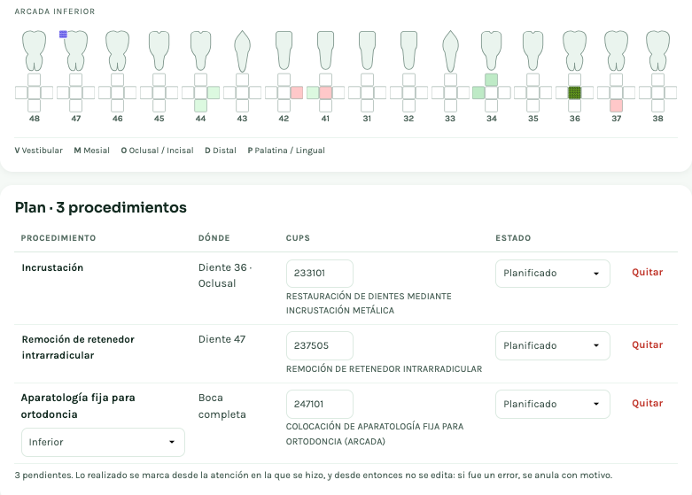
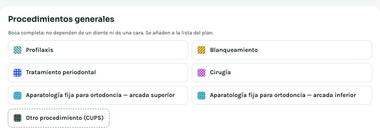
En el celular, en una pantalla estrecha o con la interfaz muy ampliada, la lista del plan se ve en tarjetas, una por procedimiento, con los mismos campos; no hace falta desplazarse de lado. En el computador, lo del plan que sale en el panel lateral de un diente se ve siempre así.
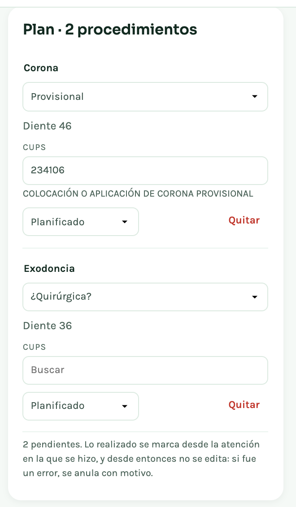
Al entrar en el campo CUPS de una línea que todavía no tiene código, la lista ofrece los códigos que corresponden a ese procedimiento en ese diente. Ninguno se pone solo: lo elige usted.
- sugerido: con lo registrado basta para saber el código (por ejemplo, la resina, la incrustación, la remoción de retenedor, la aparatología fija, o la endodoncia de un diente con sus raíces registradas).
- por confirmar: falta un dato que cambia el código. Debajo, la línea «Por confirmar: elige según…» dice cuál (si la extracción es simple o quirúrgica, el número real de raíces, si la corona es definitiva o provisional…). Regístrelo (abajo) y el código pasa a «sugerido».
- fuera de los candidatos: al buscar se puede elegir cualquier código del catálogo. En los procedimientos que tienen candidatos, los demás códigos salen con esta marca.
Con el campo vacío, Enter solo elige cuando hay un único «sugerido»; con varios, o con alguno «por confirmar», no queda nada resaltado y hay que elegir con el ratón o con las flechas. Al escribir, Enter elige la primera coincidencia, salvo que sea «por confirmar».
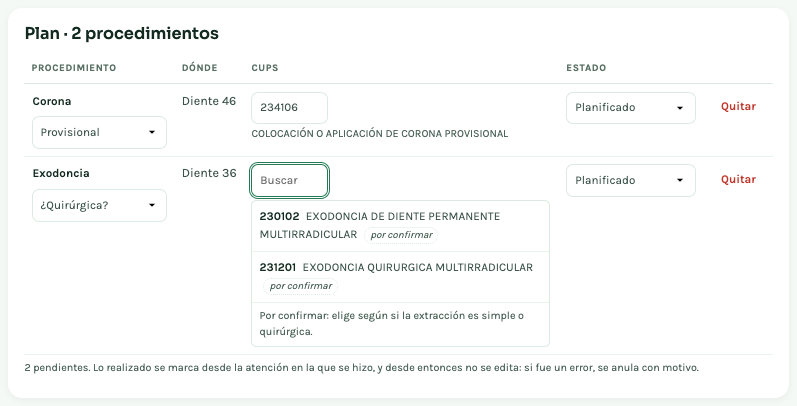
Los datos que deciden el código
Algunos procedimientos tienen, en su línea del plan, un selector con la pregunta que elige su código:
- Exodoncia: «¿Quirúrgica?»: simple o quirúrgica. No se pregunta en un diente temporal (la CUPS no distingue) ni en un diente incluido.
- Exodoncia de un diente incluido (incluido, impactado o retenido en el diagnóstico): «¿Ectópico? Abordaje»: no ectópico, ectópico con abordaje intraoral o ectópico con abordaje extraoral.
- Corona: en un permanente, «¿Definitiva o provisional?»; en un temporal, el «Material de la corona» (acero, policarboxilato o, en los anteriores, forma plástica).
- Implante: el «Tipo de implante» (aloplástico de oseointegración, metálico o cerámico). Solo se planea en dientes permanentes.
- Tratamiento periodontal: «¿Qué se hace?»: detartraje supragingival, detartraje subgingival o alisado radicular. Es una prestación por línea: si se hacen dos, se añaden dos líneas.
- Aparatología fija para ortodoncia: la arcada, Superior o Inferior. Es obligatoria y sale de qué botón se pulsó.
Las raíces registradas en el diagnóstico (ver arriba) también cuentan: deciden el código de la endodoncia y, con la cirugía, el de la exodoncia. Una línea ya realizada muestra estos datos como texto y no se cambian.
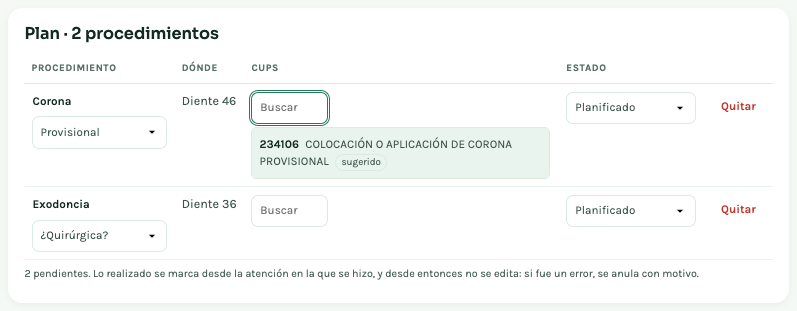
- «El 230101 no corresponde a lo registrado (quirúrgica, 1 raíz): revísalo.» El código ya elegido no casa con lo que se registró después. No se borra: elija el que corresponde, o corrija el dato si el que estaba mal era ese.
- «La opción guardada ya no corresponde a este diente: cámbiala o quítala.» La opción se eligió cuando el diente estaba de otra forma (por ejemplo, ya no consta como incluido). Se muestra marcada para poder cambiarla.
El plan lo elabora el odontólogo: añadir, pasar a En curso y quitar procedimientos es suyo. El auxiliar lo ve y puede marcar realizado, desde la atención, un procedimiento cuya actuación tenga habilitada (ver Actuaciones): el botón solo le sale en esos. Un procedimiento sin código CUPS del catálogo lo marca solo el odontólogo. Anular lo realizado es solo del odontólogo, con su motivo.
Si se planifica un procedimiento de caras o de raíz en un diente que el diagnóstico vigente da por ausente, el plan lo guarda y muestra arriba el aviso «Un procedimiento del plan va sobre un diente que el diagnóstico da por ausente.» Revise si el diente está bien marcado o si el procedimiento es otro. Los de reposición (implante, póntico, prótesis) no avisan: van justo donde falta un diente.
Cuando un procedimiento del plan se marca realizado, el Odontograma muestra la tarjeta Hecho según el plan y aún no en el diagnóstico: con un clic lo registra en el diagnóstico (por ejemplo, la resina pasa a ser una restauración existente). No lo hace solo: lo confirma usted. Lo que se eligió en el plan pasa con él: una corona provisional entra como corona temporal, y la de acero, con su material. Una incrustación realizada pasa a sus caras como restauración de incrustación metálica (ICDAS 6), «existente, hecho en este consultorio, según el plan»; en el registro del diagnóstico el hallazgo se lee «…de incrustación metálica». La remoción de retenedor y la aparatología fija no pasan al diagnóstico: son actos, no hallazgos del diente.
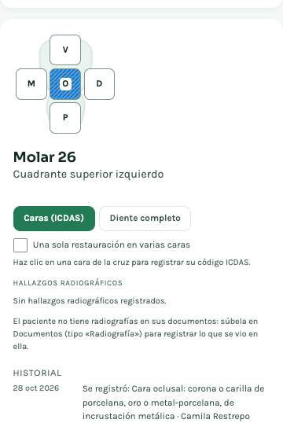
Índices, corona y radiografías
- Índices de caries de esta versión: el COP-D y el C(ICDAS)OP, con sus componentes (en dientes temporales, la «e» es la extracción indicada). Las caries sin clasificar su severidad no entran, y el bloque lo avisa.
- Al registrar una corona, indique su motivo: por caries cuenta como obturado en el COP-D; por otra razón no entra.
- Hallazgos radiográficos: elija la radiografía y escriba lo que se ve. La radiografía tiene que estar subida antes en Documentos, de tipo «Radiografía».
- Control de placa, atención tras atención: la serie del índice de O'Leary que se registra en cada atención.
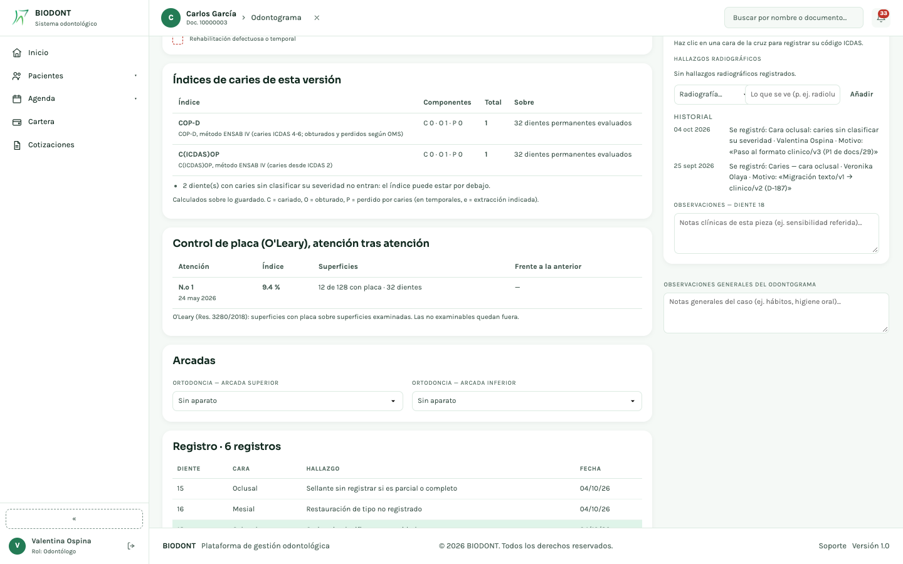
Marcar un diagnóstico o un plan no crea cobros ni tratamientos. El dinero empieza en el presupuesto.
Los cambios se guardan solos sobre la versión vigente. Cuando se cierra una atención, esa versión queda congelada: el siguiente cambio que se marque crea una versión nueva y la anterior se conserva intacta. Las versiones anteriores se abren en solo lectura desde Ver otra versión (si hay muchas, Ver versiones anteriores trae las más viejas), y cada una se puede descargar en PDF. Hay además un resumen para el paciente, con los hallazgos en lenguaje sencillo, que se puede imprimir.
Un odontograma registrado con el formato anterior se muestra en el formato clínico, con lo que el formato viejo no guardaba marcado como «no consta». Si no se pudo pasar sin perder información, la pantalla lo dice con el aviso Este diagnóstico sigue en el formato anterior y el motivo (por ejemplo, una corona cuyo código de las caras sale de la corona), y se sigue registrando como hasta ahora. En ese caso aparece el botón Registrar de nuevo en el formato clínico: al pulsarlo (y confirmar) se crea una versión nueva en blanco, que no trae lo registrado en el formato anterior, y la anterior queda intacta en el historial.
Es distinto un odontograma de un formato todavía más antiguo, que no se puede mostrar en el formato clínico: aparece de solo lectura, en una tabla de diente, superficie y registro, con el botón Registrar de nuevo en el formato clínico. Al pulsarlo se crea una versión nueva en blanco en el formato clínico y la anterior queda intacta en el historial.
Registrar el periodontograma
Odontólogo Auxiliar
El sondaje en seis sitios por diente, con recesión, sangrado, placa, supuración, movilidad y furcas, y el diagnóstico periodontal con la clasificación de 2017 de las sociedades americana y europea (AAP/EFP). Cada examen es una versión: el anterior se conserva. Un examen guardado antes de esta clasificación se sigue leyendo (ver Un examen del formato anterior).
- Abra el paciente y entre a Periodontograma.
- Pulse Nuevo examen (o Registrar el primer examen). Si hay una atención abierta, ofrece registrarlo en ella; si no, queda sin atención. Si el paciente tiene odontograma en el formato actual, el primer examen trae marcados los dientes permanentes que el odontograma da por ausentes y los implantes, cada uno con su motivo; los que no han erupcionado (incluidos, impactados o retenidos) aparecen aparte y sin marcar: márquelos ausentes si no los va a sondear. Revise lo que trae antes de crear. Los exámenes siguientes pueden copiar del anterior los dientes ausentes y los implantes. Los sondajes no se copian nunca. Pulse Crear examen.
- Escriba el sondaje en milímetros: al teclear un dígito el cursor pasa solo al sitio siguiente, en el orden clínico. El 1 espera: puede ser el comienzo de 10 a 15, así que el cursor no avanza solo; si el valor es solo 1, pase al sitio siguiente con Tab o con un clic (si escribe otro dígito justo después, se une: 1 y 2 quedan en 12). Marque el sangrado, la placa y la supuración pulsando sus círculos o, sin soltar el teclado, con las teclas B (sangrado), P (placa) y S (supuración): marcan el sitio recién medido. Cada círculo tiene tres estados: vacío y tenue (sin evaluar), relleno (sí) y círculo con borde oscuro (no: se miró y no está). Cada pulsación pasa al estado siguiente (sin evaluar, sí, no y otra vez sin evaluar). Ver Sangrado, placa y supuración: tres estados.
- Se guarda solo («Guardado»). Abajo, los indicadores del examen se recalculan.
- En un implante no se registra la movilidad: la escala de Miller es de dientes naturales. Un valor que ya estaba registrado se conserva y se muestra con un asterisco para revisarlo; solo se puede quitar, con su motivo. Por lo mismo, un diente con movilidad registrada no se puede marcar implante: primero se quita la movilidad.
- El diagnóstico periodontal está al final del examen y lo establece el odontólogo: el sistema no clasifica ni propone nada. El auxiliar no lo decide: solo transcribe lo que un odontólogo ya estableció en otro registro (ver El diagnóstico periodontal).
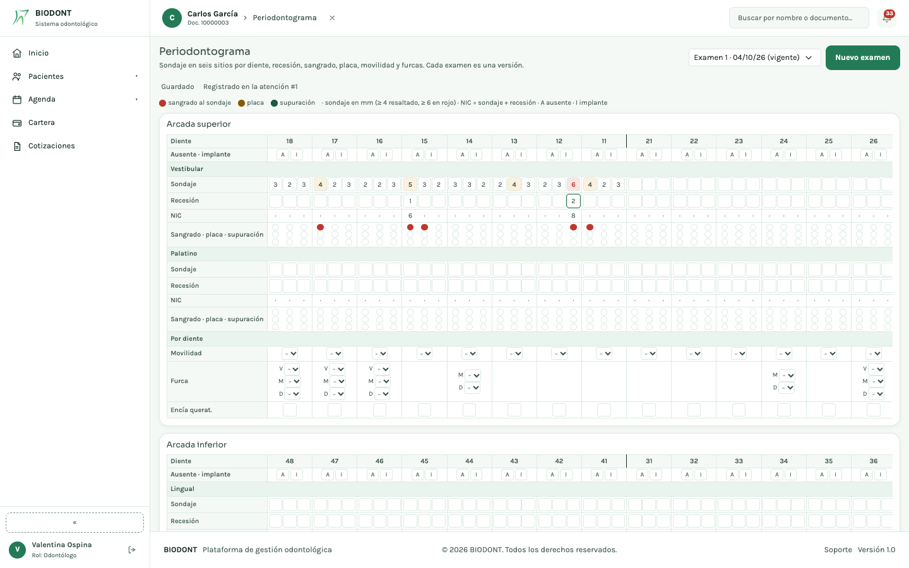
Encima de la tabla, Ver el gráfico dibuja cada arcada con el margen gingival, el fondo del sondaje y el área entre los dos, las profundidades de 4 y de 6 mm o más, el sangrado, la supuración, las furcas, la movilidad y los implantes. Se lee sin color y también sale en el PDF. Es una representación: la tabla sigue siendo el examen completo. En los indicadores, el NIC dice sobre cuántos sitios se pudo calcular (hace falta la recesión).
Si el paciente tiene exámenes anteriores, Comparar con el examen anterior lista, sitio a sitio, los que cambiaron en sondaje, recesión o NIC, y cuenta aparte cuántos cambiaron 2 mm o más en el sondaje. Por defecto compara con el anterior no anulado; puede elegir otro. Un sitio sin medir en uno de los dos dice «no comparable».
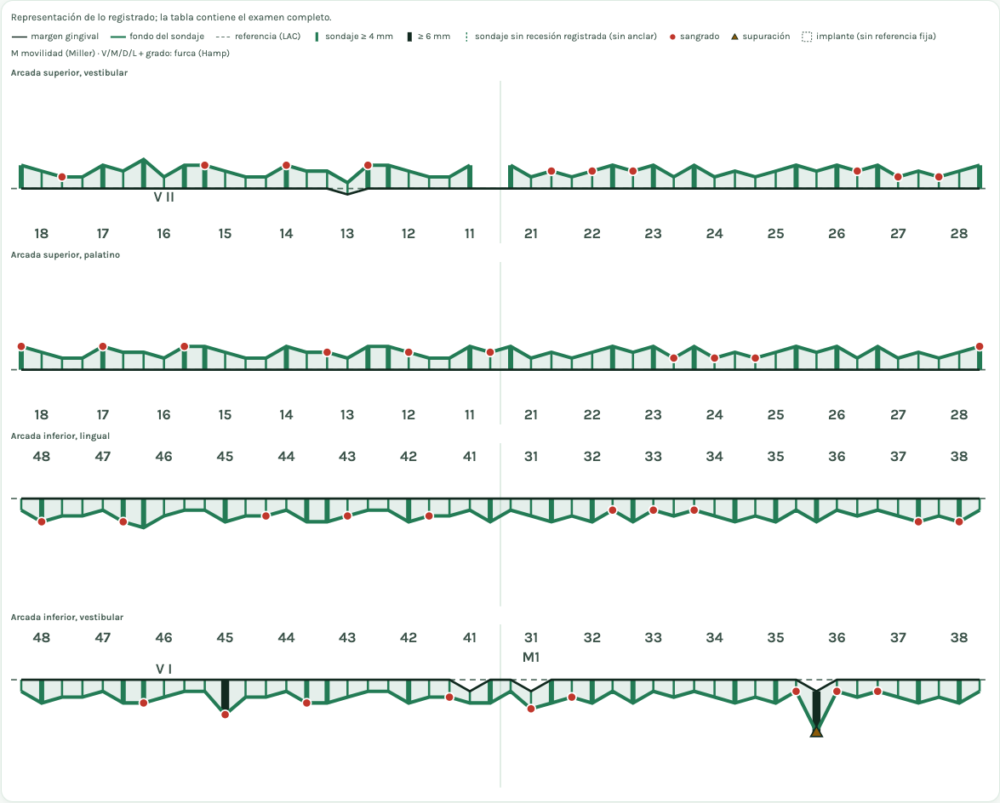
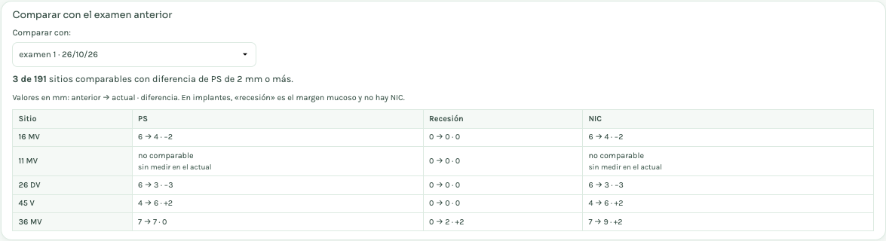
Borrar un valor ya guardado pide un motivo y queda en el historial. Un examen equivocado lo anula el odontólogo, con motivo: no se borra, queda visible y fuera de los indicadores. Cada examen se descarga en PDF con Descargar PDF, y al cerrarse la atención queda congelado.
Sangrado, placa y supuración: tres estados
En cada sitio, la marca puede estar en uno de tres estados, y no significan lo mismo:
- Sin evaluar (círculo vacío y tenue): nadie lo miró. No cuenta como «no».
- Sí (círculo relleno): se midió y está presente.
- No (círculo con borde oscuro): se midió y no está.
Pasar de «no» a «sin evaluar» es quitar un dato que ya estaba guardado, así que pide un motivo, como cualquier dato guardado que se quita. Para no pulsar sitio por sitio, sobre la tabla hay un atajo del sangrado: cuadrante 1, cuadrante 2, cuadrante 3 y cuadrante 4 marcan «no sangra» solo en los sitios con sondaje y sin marca; los sitios sin sondaje, los que ya tenían un «sí» y los de los implantes no se tocan (el sangrado de un implante se anota en su condición periimplantar). Debajo de la leyenda, el sistema dice cuántos sitios marcó.
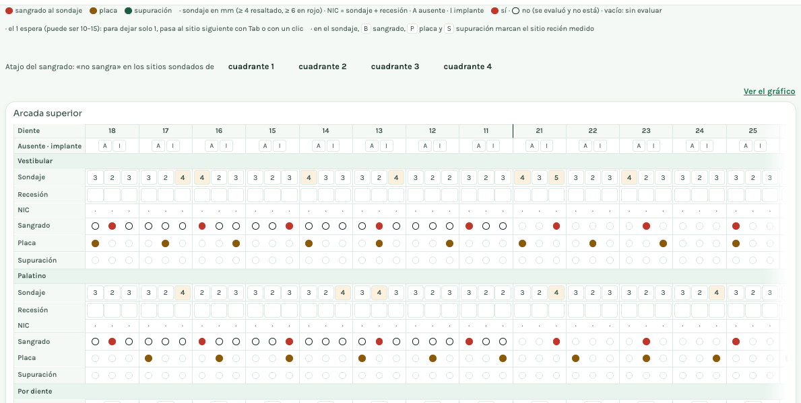
Los porcentajes de sangrado, placa y supuración se calculan solo sobre los sitios evaluados (los que están en «sí» o en «no»), y el indicador dice sobre cuántos: por ejemplo «47,2 % (34 de 72 sitios evaluados; 168 sondados)». Un sitio sin evaluar no baja el porcentaje. Si no hay ningún sitio evaluado, el indicador dice no evaluado en vez de mostrar 0 %.
Además de los porcentajes, la tarjeta Indicadores de este examen calcula lo que el diagnóstico necesita tener a la vista. Nada de esto clasifica: lo muestra con su cobertura, y lo que no se pudo calcular dice «no consta», nunca un cero.
- Sangrado al sondaje con su banda (menos de 10 %, entre 10 % y 30 %, más de 30 %), rotulada como extensión epidemiológica, y la cobertura del sondaje: si no se sondaron todos los sitios, dice que no describe la boca completa.
- Profundidad de sondaje máxima, con su diente y su sitio, y las bolsas de 4 mm o más que sangran; las que tienen el sangrado sin evaluar se cuentan aparte.
- Dientes con pérdida de inserción interproximal de 1, 3 y 5 mm o más, y si hay dos o más dientes no vecinos con pérdida.
- Furca y movilidad registradas, cada una con su escala (Hamp, Miller).
- Extensión: el porcentaje de dientes en el estadio elegido (ver «El diagnóstico periodontal», más abajo).
- Cambios desde el examen anterior: el mayor aumento de la pérdida de inserción, cuántos sitios perdieron 2 mm o más y los meses entre los dos. Solo compara los sitios medidos en los dos exámenes, y con menos de 5 años lo dice. Un examen anulado no cuenta como anterior.
- Pérdida ósea / edad, si algún diente tiene la pérdida ósea anotada en porcentaje.
- Por cada implante: la profundidad máxima, su cambio desde el examen anterior y el sangrado.
- Para el estado evolutivo: el sangrado, las bolsas que sangran y los sitios que perdieron inserción. Sin un examen anterior comparable dice «información insuficiente». El estado lo elige el odontólogo.
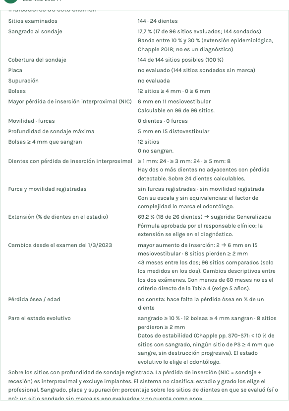
El diagnóstico periodontal (clasificación de 2017)
Odontólogo lo establece, lo confirma y lo descarta · Auxiliar solo transcribe lo ya establecido
Al final del examen está el cuadro Diagnóstico periodontal. El sistema no clasifica ni propone nada: todo lo elige el odontólogo con el examen a la vista, y lo que nadie dio queda en «no consta» o «sin evaluar», nunca como un «no». La única ayuda es la extensión calculada, que se propone y el odontólogo acepta o cambia (ver el paso del estadio). Se llena de arriba abajo:
- Categoría: salud gingival (tres variantes), gingivitis inducida por biofilm, periodontitis, o pérdida de inserción por una causa independiente de la periodontitis. Según la categoría aparecen las preguntas que corresponden (por ejemplo, en la gingivitis, el contexto y los factores).
- Estado del diagnóstico: Borrador o Definitivo. Un borrador no alimenta ninguna opción de tratamiento hasta que se confirme como definitivo.
- Forma y condiciones sistémicas: periodontitis, o periodontitis como manifestación de una enfermedad sistémica (que hay que nombrar), con los descriptores que correspondan.
- Definición de caso y causas no periodontales: la vía por la que se define el caso y, para cada causa que podría explicar la pérdida de inserción (recesión de origen traumático, caries cervical, un segundo molar afectado por un tercero, lesión endodóntica, fractura radicular vertical), uno de cuatro estados: Descartada, Presente (con los dientes), No evaluada o No concluyente.
- Estadio (I a IV), de qué se deduce, si es inicial o posterior al tratamiento y la extensión; los factores de complejidad con su estado (el sistema no marca
ninguno, solo muestra a un lado lo registrado) y los dientes que los sostienen. La pérdida dentaria por periodontitis, los dientes remanentes y los
pares oclusales se proponen desde el odontograma, pero cuentan solo cuando el odontólogo pulsa Confirmar (Quitar confirmación la deshace).
En el estadio IV se elige el tipo de caso por arcada. Los dientes incluidos, impactados o sin erupcionar no cuentan como presentes.
Bajo la extensión aparece la extensión calculada, con la fórmula que aprobó el responsable clínico: los dientes en el estadio elegido más los ausentes por periodontitis, sobre los dientes presentes más esos ausentes, sin terceros molares. Menos de 30 % es localizada; 30 % o más, generalizada. Si lo calculado da una extensión, el botón Usar, que lleva el nombre de la extensión («Usar «Generalizada»» o «Usar «Localizada»»), la pone; si los dientes sin datos, la pérdida dentaria sin confirmar, un tercer molar que podría estar contado o un diente sondado que el odontograma da por ausente pueden cambiar el resultado, lo dice y no propone nada. Se calcula con lo guardado: con un estadio distinto en pantalla, o con cambios sin guardar, espera a que se guarden. - Grado (A, B o C), quién lo asigna y con qué evidencia, el tabaco y la diabetes. Con diabetes se anota la HbA1c con su fecha: sin fecha no se guarda.
- Datos por diente (pérdida ósea radiográfica con su radiografía de origen, migración), el estado evolutivo del examen y los hallazgos por sitio.
- Condiciones periimplantares, un bloque por cada implante, con la referencia clínica (un examen anterior) y la radiográfica. «Con datos previos» solo se marca si constan las dos.
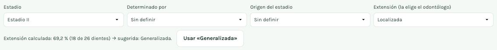
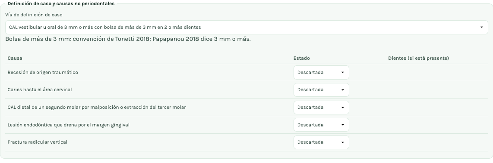
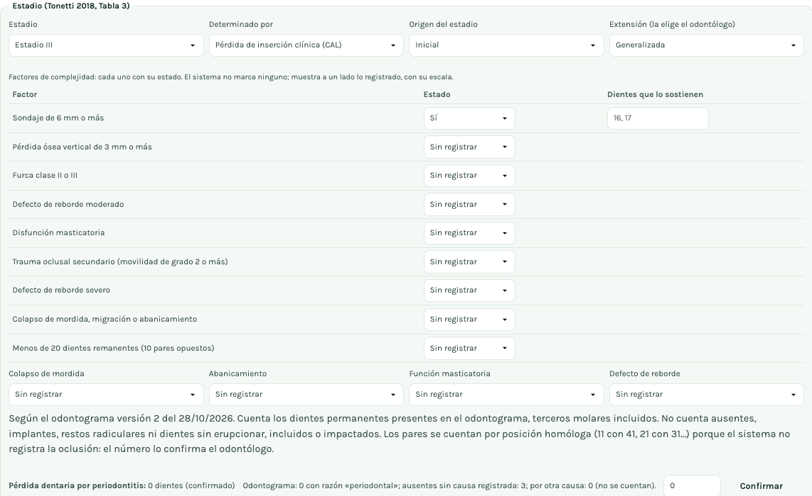
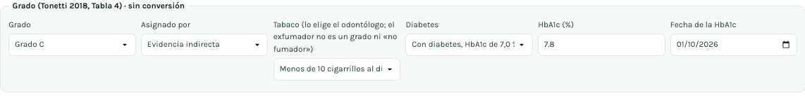
Si el caso se define por la vía de la pérdida de inserción vestibular u oral, el diagnóstico no se guarda como Definitivo mientras alguna causa no periodontal siga «No evaluada»: el sistema avisa cuáles faltan. Como Borrador sí se guarda así. Es a propósito: nadie debe dar por periodontitis lo que puede ser una causa independiente sin haberla mirado.
Cuando el auxiliar transcribe un diagnóstico
El auxiliar no establece el diagnóstico. Si debe pasarlo al examen, el cuadro le muestra Transcribir un diagnóstico ya establecido y le exige indicar el Registro de origen (obligatorio): una atención firmada o cerrada por un odontólogo, o un examen periodontal con diagnóstico establecido. Si no hay ninguno, el cuadro lo dice y no deja transcribir nada. Puede añadir un texto complementario de hasta 200 caracteres.
Lo transcrito queda pendiente de confirmar: el cuadro lo dice con todas sus letras, nombra a quien lo estableció y es un borrador, que no alimenta ningún tratamiento. Firmar o cerrar la atención no lo confirma. Solo un odontólogo lo resuelve, con dos botones: Confirmar esta versión, que lo deja como diagnóstico transcrito y confirmado (con su nombre y la fecha), o Descartar la transcripción, que pide un motivo de al menos cinco caracteres y lo marca como «no es un diagnóstico establecido». Si el odontólogo cambia algo de lo transcrito, sigue pendiente hasta que lo confirme. El botón de confirmar espera a que el examen esté guardado, para confirmar la versión que ve.
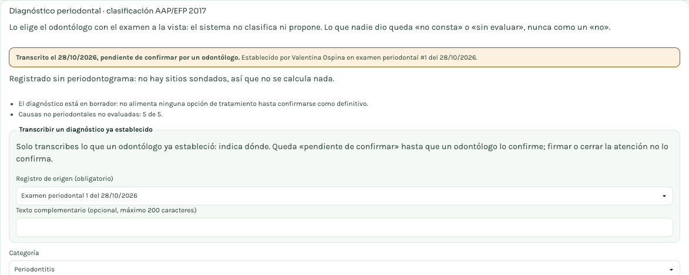
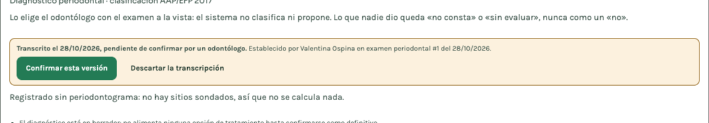
El PDF del examen también lo dice: imprime lo pendiente como pendiente («Transcrito por … el …, pendiente de confirmar por un odontólogo», con el estado «Borrador (transcrito, pendiente de confirmar)»), y lo que no consta como «no consta».
Un examen del formato anterior
Los exámenes guardados antes de la clasificación de 2017 se siguen leyendo y, si hace falta, se siguen midiendo, pero su diagnóstico queda como registro anterior: la pantalla lo muestra tal cual se registró (por ejemplo, «Periodontitis (registro anterior al esquema 2017 completo): Estadio III · Grado B · Generalizada») y avisa de que no se reescribe ni se completa. El diagnóstico de 2017 se registra en un examen nuevo. En el examen anterior, el sangrado, la placa y la supuración se leen como siempre (sí o vacío): no tienen el estado «no».
Cotizar a quien todavía no es paciente
Recepción Odontólogo Administración — el auxiliar no entra aquí
Alguien llama o entra a preguntar cuánto cuesta un blanqueamiento. Todavía no es paciente y puede que nunca lo sea. Para eso están las cotizaciones: dan un precio por escrito sin abrirle historia clínica a quien solo preguntó.
- Entre a Cotizaciones y pulse + Nueva cotización.
- Escriba el nombre de quien pregunta. Es lo único obligatorio. Documento, edad y teléfono son opcionales.
- Añada los procedimientos con su cantidad y su valor.
- Elija Válida por (15, 30, 60 o 90 días): el sistema le muestra hasta qué fecha respeta ese precio.
- Guarde y entréguele el PDF.
Cuando la persona decide tratarse
- En Cotizaciones, pulse Convertir en su fila.
- Si ya es paciente, en Paciente ya registrado búsquela por nombre o documento y pulse Convertir aquí.
- Si no lo es, en Registrar paciente nuevo llene nombres, apellidos y documento y pulse Registrar y convertir. Si el sistema encuentra a alguien parecido, lo avisa («Puede que ya esté registrado») y ofrece Es esta persona para no duplicarla. Si es menor de edad, pide además a su representante.
La cotización pasa a ser el presupuesto de ese paciente, con sus mismos procedimientos y precios. Sigue apareciendo en el listado de cotizaciones, con la etiqueta Convertida (se ve en Todas y en el filtro Convertidas) y el enlace Su presupuesto; lo que ya no conserva son los datos de quien la pidió.
El buscador de conversión muestra 6 resultados. Si hay más coincidencias, lo avisa («Se muestran 6 de N coincidencias»); afine por documento, que es único, para dar con el suyo.
La cotización caduca a los 180 días de creada, aunque haya elegido una validez menor: el sistema no deja prometer una vigencia que luego no respeta. A los seis meses la marca como vencida por su cuenta.
Presupuesto y aceptación
Odontólogo Recepción Administración — el auxiliar no entra aquí
El presupuesto es lo que se le propone a un paciente ya registrado, procedimiento por procedimiento. Arriba se ve un resumen: cuántos hay por decidir, cuánto suman, lo aceptado y cuántos siguen sin firma del paciente.
- Abra el paciente y entre a Presupuesto.
- Pulse Nuevo presupuesto. Se abre una ventana de trabajo.
- En Buscar en el tarifario escriba una letra o el código (no hace falta la tilde). Al elegir un procedimiento entra con su nombre y su precio; si ya estaba, suma uno a la cantidad. Si no está en el tarifario, use Escribir a mano.
- Ajuste la cantidad, el valor unitario y el diente cuando aplique.
- Elija la vigencia (15, 30, 60 o 90 días), el descuento con su motivo y las observaciones.
- Pulse Crear presupuesto y luego Descargar PDF o Pedir firma para que el paciente lo firme en su celular. Pedir la firma es del Odontólogo y de Administración: a Recepción no se le ofrece el botón (puede ver si el presupuesto está sin firma, con firma pendiente o firmado). Lo único que Recepción pide firmado es la autorización de tratamiento de datos.
Llevar desde el plan del odontograma
Odontólogo
Lo que ya está en el plan de tratamiento no hay que volver a escribirlo: se lleva al presupuesto.
- En Presupuesto, pulse Llevar desde el plan. Se abre una lista con los procedimientos del plan que siguen planificados o en curso, cada uno con su CUPS (o «Sin CUPS») y su precio del tarifario.
- Marque los que pasan al presupuesto. Uno que ya está en otro presupuesto lo dice («Ya está en …»): marcarlo otra vez lo lleva repetido a propósito.
- En Dónde elija Un presupuesto nuevo o ampliar uno que todavía se pueda cambiar (sin líneas decididas, sin firma pendiente y sin firmar).
- Pulse Crear presupuesto o Ampliar presupuesto. Las líneas quedan marcadas Del plan, y los precios se ajustan después en el presupuesto, como siempre.
La aparatología fija para ortodoncia se nombra con su arcada, tanto en esta lista como en la línea del presupuesto: «Aparatología fija para ortodoncia (Arcada inferior)». Si el plan tiene las dos arcadas, entran como dos líneas.
El plan no cambia: lo que se edite, rechace o anule en el presupuesto no vuelve al odontograma, y el odontograma sigue sin mostrar precios. Un procedimiento sin CUPS, o con un CUPS sin precio en el tarifario, dice en la lista «Sin precio: se revisa», entra a $0 y su línea queda marcada «Sin precio: revísalo»; uno con un precio que no vale (con centavos, por ejemplo) se avisa como «Precio a revisar». Si el plan cambia mientras la lista está abierta, el sistema lo avisa, vuelve a leer la lista y hay que elegir de nuevo.
Aceptar procedimiento por procedimiento
El paciente casi nunca acepta el plan entero de una vez. Por eso cada línea tiene Aceptar y No acepta, y cuando quedan varias por decidir aparece Aceptar todos, que pide confirmar antes de crear los tratamientos.
Si al aceptar una línea su valor queda en $0 —porque la lista dice $0, o porque tras su parte del descuento queda neta en cero—, el sistema no la acepta de inmediato. Avisa «Con esta decisión una línea aceptada queda en $0 (sola o tras su parte del descuento): su tratamiento y su cargo en Cartera quedan en cero.» y ofrece Aceptar a $0, como cortesía o No.
- Aceptar todos también avisa cuántas líneas quedan en $0 («Una línea queda en $0» o «N líneas quedan en $0») y su botón pasa a Aceptar todos, a $0 como cortesía.
- No acepta pide la misma confirmación cuando, al rechazar una línea, otra ya aceptada queda en $0 neto (su parte del descuento crece).
- Anular el tratamiento de una línea no la pide.
Al pulsar Aceptar, el sistema crea el tratamiento con ese monto —aparece en la pestaña Tratamientos— y un cargo pendiente en la Cartera del paciente. No hay que volver a escribir el valor.
Una línea marcada No acepta puede volver a Propuesto con Devolver a propuesta, si el paciente cambió de idea o se marcó por error. Si esa línea vino del plan y el mismo procedimiento ya está en otra línea viva, el sistema pregunta «¿Quieres tenerlo repetido a propósito?»: con Sí, devolverla igual queda repetida.
Si el paciente tiene un enlace vivo para firmar el presupuesto, ni Aceptar, ni No acepta, ni Devolver a propuesta, ni Aceptar todos se ofrecen, y tampoco Editar ni Agregar procedimiento olvidado: cambiar el presupuesto cambiaría lo que el paciente va a firmar. La pantalla dice por qué. Espere a que firme, o anule la solicitud desde Documentos del paciente.
Los tratamientos y sus cargos quedan al precio de lista. El descuento del presupuesto llega a la Cartera como un movimiento de descuento aparte, por la parte de lo que se haya aceptado: se reparte entre las líneas en proporción a su valor, así que aceptar solo una línea descuenta solo su parte (y nunca más de lo aceptado). Cada cargo dice «ya descontado: −$ …» y el tratamiento «incluye −$ … de descuento»: lo que el paciente debe es el saldo menos esa parte, y pagar ese saldo deja el tratamiento finalizado. En el presupuesto, «Aceptado (a precio de lista)» y «Lo aceptado, con descuento» muestran las dos cifras. Si se rechaza o se agrega una línea, las partes se recalculan; si se anula el tratamiento de una línea, su parte deja de contar.
El cargo nace pendiente: el dinero entra cuando se registra el pago o los abonos en Cartera. Es entonces cuando el sistema sabe cuánto se ha pagado de ese tratamiento y cuánto falta.
Editar, agregar un olvidado y anular
- Mientras ninguna línea esté decidida y el paciente no lo haya firmado, el presupuesto se cambia con Editar.
- Después, solo se puede + Agregar procedimiento olvidado: lo que ya había no se toca, y lo nuevo queda marcado como agregado después. El sistema dice por qué ya no se edita.
- Anular pide el motivo y solo está disponible si nada se ha aceptado. Lo anulado no se borra: se ve con Mostrar anulados.
Si un procedimiento sale en $0, es que ese código todavía no tiene precio en el tarifario. Se carga desde Administración → Tarifario de procedimientos. Al aceptar, el sistema avisa si quedan líneas «Sin precio» ($0); no lo impide.
Cobrar y cerrar la caja
Recepción Administración Odontólogo Auxiliar
En la cartera la deuda y el pago son dos cosas distintas: lo que el paciente debe es un cargo, y lo que paga es un cobro que abona a un cargo. Arriba se ven Cobrado hoy, Por cobrar y Cobrado en el mes; debajo, tres pestañas: Caja del día, Por cobrar y Movimientos.
Cuando nace una deuda: el cargo
Los procedimientos aceptados en un presupuesto crean su cargo solos. Para lo que no pasó por un presupuesto, pulse Registrar cargo, busque al paciente escribiendo, ponga el concepto y el monto, y pulse Registrar cargo.
Registrar un cobro
- Pulse Registrar cobro (o Cobrar en la fila del cargo, en la pestaña Por cobrar).
- Busque al paciente escribiendo parte del nombre o el documento. Aparecen sus cargos con el saldo de cada uno: elija el que paga. Si no debe nada, la ventana lo dice; registre primero el cargo.
- Ponga el monto (hasta el saldo), el medio de pago y, si quiere, una referencia (número de transacción…).
- Pulse Registrar cobro.
Cargos, cobros, egresos, el efectivo contado al cerrar la caja, los precios del tarifario, de los presupuestos y de los tratamientos van sin centavos: si se escriben, el sistema dice «va en pesos enteros, sin centavos» y no guarda. Lo que se registró antes con centavos se conserva: puede editar otros datos de ese registro sin tocarlo, y el saldo exacto de un cargo así se puede cobrar.
Pagos parciales (abonos)
Si el paciente paga a cuotas, cada pago es un cobro sobre el mismo cargo. El cargo queda pagado solo cuando sus cobros cubren el total; mientras tanto la fila muestra cuánto falta.
Un cobro, un cargo o un egreso equivocado se Anular con un motivo (mínimo 5 caracteres). Deja de sumar en la caja y en el saldo, pero queda en el registro, atenuado, con quién lo anuló y por qué. Para verlos, marque Mostrar pagados y anulados.
Anulan los cuatro roles, con las mismas reglas: solo lo de la caja abierta (una caja ya cerrada, solo Administración), un egreso solo Administración, y un cargo que viene de un presupuesto aceptado se anula desde su tratamiento.
Anular un tratamiento anula con él sus cargos sin cobros. Si el cargo ya tiene cobros, queda con la marca «De un tratamiento (Anulado)» y la nota «Tratamiento anulado. Para anular el cargo, anula antes sus cobros». Ese cargo ya no cuenta como deuda: ni en «Por cobrar», ni en la cartera abierta de Inicio, ni en la campana, ni en el «debe» de Tratamientos. En Cartera se ve, con sus abonos y con saldo $0, al marcar Mostrar pagados y anulados (en Movimientos sale siempre, con «Su tratamiento está anulado»). Al anular su último cobro, el cargo se cancela solo, con el motivo del tratamiento. Desactivar a un paciente ya no avisa por ese cargo ni por tratamientos anulados. Un cobro de un día con la caja cerrada dice «Caja cerrada» en lugar de ofrecer anularlo (solo Administración lo anula).
En la cartera, Recepción ve el concepto del cobro —el nombre del procedimiento, por ejemplo «Endodoncia molar», que es también lo que dice la campana—, el monto y el estado, pero no el diagnóstico ni las notas clínicas. No es un error de la pantalla: es la separación entre lo administrativo y lo clínico.
Cerrar la caja del día
Lo puede hacer cualquiera de los cuatro roles. En la pestaña Caja del día están los cobros de hoy y, al lado, el Cierre de caja:
- Cuente el efectivo y escríbalo en Efectivo contado. El sistema calcula el efectivo esperado con los cobros en efectivo que siguen vigentes.
- Si no coinciden, explique la diferencia (es obligatorio).
- Pulse Cerrar caja de hoy.
Cerrada la caja, ya no se registran cobros con la fecha de hoy: la ventana de cobro lo avisa.
Solo Administración ve Registrar egreso (categoría, fecha, concepto, monto y medio) y el balance del consultorio.
Documentos que firma el paciente
Los cuatro roles abren esta pantalla, pero cada uno puede hacer cosas distintas
Son cuatro y están todos en la misma pantalla: abra el paciente y entre a Documentos.
| Documento | Cuándo se usa | Quién lo emite |
|---|---|---|
| Consentimiento informado | Antes de un procedimiento, dejando constancia de que se le explicaron riesgos y alternativas. | Odontólogo y Auxiliar |
| Autorización de tratamiento de datos | Para poder tratar sus datos personales (Ley 1581). Conviene recogerla en la admisión, con cualquier paciente. | Odontólogo, auxiliar y Recepción |
| Rechazo de tratamiento | El paciente declina un procedimiento. Se registra primero de qué se le informó y se firma después. | Solo el odontólogo |
| Revocatoria de consentimiento | El paciente retira un consentimiento que ya había dado. | Recepción registra la petición (el odontólogo también puede registrarla); solo un odontólogo la resuelve |
Recepción puede dejar constancia de que el paciente pidió revocar un consentimiento — es quien está en el mostrador cuando lo pide —, pero la decisión clínica de qué implica esa revocatoria la toma un profesional. Por eso a Recepción no se le ofrece el botón de resolver.
Cómo se firma
- Marque la casilla Verifiqué la identidad del paciente. Quedará constancia de su nombre y la fecha en el documento firmado.
- En el consentimiento, escriba en Procedimiento, riesgos y alternativas explicados al paciente qué se va a hacer, qué riesgos tiene y qué otras opciones hay. Es obligatorio (mínimo 40 caracteres) y queda escrito dentro del documento que firma el paciente.
- Pulse Solicitar firma.
- Aparece un código QR. Páseselo al paciente para que lo escanee con su celular, o abra el enlace en la tablet del consultorio.
- El paciente lee el documento, marca la casilla, escribe su nombre y su documento, firma con el dedo y confirma.
En una instalación local, cuando el sistema se abre como localhost, el enlace del código solo sirve en
ese mismo equipo: el celular del paciente no sabe llegar. El propio sistema lo advierte
debajo del código. Para que funcione desde otros dispositivos hay que abrir Biodont por la
dirección de red del consultorio, no por localhost.
Alternativa siempre disponible: Descargar para firmar a mano. El impreso trae el espacio para escribir a mano el procedimiento, sus riesgos y alternativas. La pantalla del paciente también le ofrece «¿No puedes firmar en la pantalla?», que le indica pedir el documento en papel.
Si Biodont muestra un aviso rojo sobre el certificado de seguridad (HTTPS), la firma solo funciona en el equipo del servidor hasta que se corrija el certificado: desde la tablet o el celular se bloquea, porque la conexión no va cifrada. Mientras tanto, firme en ese equipo o en papel.
Mientras el consultorio no registre la aprobación de cada texto, el documento lleva un aviso de borrador dentro de lo que firma el paciente. Es intencional: así nadie puede sostener después que firmó un texto aprobado. La aprobación se registra en Administración → Documentos legales, en el campo Aprobación jurídica de cada documento; ahí mismo se puede cargar un texto propio.
Ver quién entró a qué
Odontólogo responsable clínico — nadie más
La historia clínica es información reservada, y la norma exige poder saber quién la consultó. El Registro de accesos guarda quién entró, a qué, cuándo — y también quién lo intentó y no pudo.
Se filtra por acción (consulta, creación, modificación, firma, anulación…), por resultado (concedidos o solo denegados), por persona y por fechas.
La pantalla dice que la ausencia de asientos no significa ausencia de accesos: el registro automático cubre las rutas que pasan por el motor de permisos. Léalo como una fuente parcial, no como la lista completa de todo lo que ocurrió.
¿Estaba autorizada esa actuación el día que se hizo?
Es la otra pregunta de auditoría, y se responde en Actuaciones, no aquí. Al revisar una atención de hace meses puede necesitar saber si quien la registró podía hacerlo entonces — no ahora—, porque el catálogo del auxiliar cambia con el tiempo.
- Entre a Actuaciones.
- Busque el procedimiento y pulse ¿Autorizada el…?.
- Escriba la fecha de la atención y pulse Consultar.
Sí estaba autorizada o No estaba autorizada vienen acompañadas del cambio que lo sostiene: la fecha, quién lo hizo y el motivo. La tercera es «No hay constancia», y significa que no existe ningún cambio registrado antes de esa fecha — la actuación quedó como la dejó la instalación inicial. El sistema no afirma que se hubiera denegado, porque nadie decidió nada al respecto.
El histórico de la actuación le da la lista de cambios; esta consulta le da la respuesta a una fecha concreta. Deducirla leyendo el histórico es fácil de hacer mal, y equivocarse aquí es afirmar que alguien hizo algo que no podía.
Cuidar los datos de los pacientes
Para: Odontólogo Auxiliar Recepción Administración — todo el equipo
Biodont guarda datos de salud, y la ley los trata como datos sensibles: se usan para atender al paciente, para lo que él autorizó y para lo que la ley obliga al consultorio (por ejemplo, conservar la historia clínica), y para nada más. Esta guía es lo mínimo que cada persona del consultorio necesita saber para cuidarlos. La regla completa está en la política de datos que usted aceptó al entrar; si las dos dicen algo distinto, manda la política.
Mire solo lo que necesita para su trabajo
- El sistema ya le muestra solo lo que su rol puede ver (Qué puede hacer cada rol). Pero que pueda verlo no quiere decir que deba abrirlo: abra la historia de un paciente para atenderlo, cobrarle o agendarlo, nunca por curiosidad. Eso incluye la de un familiar, un vecino, un compañero o la suya propia.
- Cada vez que alguien consulta una historia clínica, queda su nombre, la hora y lo que abrió en el registro de accesos, y el responsable clínico lo revisa (Ver quién entró a qué).
- La pertenencia étnica y la discapacidad de un paciente solo las ven el odontólogo y el auxiliar. No las anote en otros campos, en las notas ni en la agenda.
Su cuenta es solo suya
- No preste su contraseña, su PIN de firma ni sus códigos de recuperación, ni siquiera a un compañero por un momento. Todo lo que se haga con su cuenta queda a su nombre, y lo que se firme con su PIN vale como firma suya.
- En un equipo que comparte con otros, pulse Salir antes de levantarse. La sesión se cierra sola a las 8 horas, pero en ese tiempo cualquiera que se siente al equipo trabaja con su nombre.
- Si cree que alguien conoce su contraseña o entró con su cuenta: Salir en todos los equipos, cambie la contraseña en Mi perfil y avise a Administración (es un incidente, ver abajo).
Los datos no salen por canales personales
- Nada de fotos de la pantalla, de una radiografía o de un documento con su celular. No reenvíe historias, fórmulas ni radiografías por su WhatsApp o su correo personal, ni las copie a una memoria USB.
- El recordatorio por WhatsApp se prepara solo con el botón del sistema: comprueba que el paciente lo autorizó y abre WhatsApp con un mensaje que no lleva el motivo clínico; usted lo envía sin añadirle datos de salud (Agendar y reprogramar una cita).
- Por teléfono, no dé datos de un paciente a quien llama hasta saber que es el paciente o alguien a quien él autorizó. Si tiene dudas, ofrezca devolver la llamada al número de la ficha.
- Papel y pantalla: los impresos (la atención, una fórmula, un presupuesto) se entregan al paciente o a quien él autorizó; no se dejan en el mostrador. Lo que sobre, se rompe antes de botarlo. Que el paciente que entra no vea en la pantalla los datos del que salió.
Si un paciente pide sus datos, corregirlos o que se borren
Es un derecho del paciente y tiene un plazo legal: 10 días hábiles para una consulta y 15 para un reclamo (corregir, suprimir o quejarse). Por eso no se resuelve de palabra ni en una hoja suelta:
- Recepción o Administración la registran en Datos personales → Solicitudes de datos, el mismo día. El sistema le pone el radicado y la fecha en que vence.
- El paciente también puede presentarla él mismo, sin cuenta: la página pública de la política de datos del consultorio lo lleva a Solicitudes sobre tus datos personales.
- La responde Administración. Si a usted se la piden y no es de Recepción ni de Administración, tome el nombre y un teléfono y pásela ese mismo día.
Si algo salió mal: avise el mismo día
Es un incidente todo lo que pueda dejar datos de un paciente donde no deben estar, o en manos de quien no debe tenerlos. Por ejemplo:
- un impreso o un mensaje que llegó a otro paciente;
- un celular, una tablet o un computador del consultorio perdido o robado, sobre todo con la sesión abierta;
- alguien que vio o se llevó lo que no debía;
- datos que no son de ese paciente, o cambios que nadie del equipo hizo;
- una contraseña o un PIN que conoce otra persona.
Avísele a Administración ese mismo día, aunque no esté seguro de que sea grave. No lo arregle por su cuenta ni borre nada: lo que parece una limpieza borra la prueba de lo que pasó. Administración lo registra en Datos personales → Incidentes y decide con el proveedor del sistema si hay que informarlo a la Superintendencia de Industria y Comercio. Ese plazo empieza a contar cuando el incidente se detecta, y por eso un aviso tarde es un problema aunque el incidente sea pequeño. Un incidente avisado a tiempo se puede manejar; uno escondido es un incumplimiento.
Constancia de que la leyó
La ley pide que el consultorio enseñe su política al equipo, no solo que la publique (Decreto 1377 de 2013, art. 27). Esta constancia deja prueba de que cada persona recibió y leyó la guía (no reemplaza las demás medidas de la política): Administración la imprime, cada persona la firma al empezar y otra vez cuando la guía cambie, y se guarda con los documentos del consultorio.
| Nombre | Rol | Fecha | Firma |
|---|---|---|---|
Guía de protección de datos para el personal · versión del 6 de octubre de 2026.
Atender una solicitud sobre datos personales
Recepción Administración radican y vinculan · Administración responde, prorroga y cierra
Cualquier persona puede pedirle al consultorio que le diga qué datos suyos tiene, que los corrija o que los suprima (consulta), o presentar un reclamo si cree que se incumple la ley (Ley 1581 de 2012). La ley fija plazos que corren aunque nadie esté mirando: la consulta se responde en 10 días hábiles (prorrogable 5 más) y el reclamo en 15 días hábiles (prorrogable 8 más). El sistema cuenta los días hábiles con los festivos de Colombia y dice cuánto queda.
La solicitud llega por el mostrador, por correo o por teléfono, y entonces la radica el personal; o la presenta el propio titular desde el formulario público «Solicitudes sobre tus datos personales», y entonces ya viene radicada. Todas aparecen en la misma lista.
- Abra el menú Datos personales → Solicitudes de datos. Arriba, tres cifras: las vencidas, las que vencen en 2 días hábiles o menos y las abiertas.
- Para radicar una a mano, + Radicar solicitud: el tipo (consulta o reclamo), por dónde llegó (presencial, correo o teléfono), quién la presenta (el titular, su representante legal, un causahabiente o un apoderado), el nombre completo, el documento, un correo o un teléfono y qué solicita. Sin correo ni teléfono no se puede radicar: sin cómo entregar la respuesta, el término corre igual y no se puede cumplir. Un causahabiente (alguien que pide la historia de una persona fallecida) debe además declarar el parentesco y las pruebas de fallecimiento y de parentesco.
- Al radicar, el sistema da el número de radicado (por ejemplo
HD-2026-00001) y la fecha en que vence. Dele ese número al titular: con él y su documento puede consultar cómo va. - En cada fila: Vincular paciente (si el titular es paciente del consultorio: lo busca y lo confirma usted, el sistema no lo adivina por el documento), Responder (el texto que se entrega al titular), Prorrogar y Cerrar.
Prorrogar amplía el término contando desde su vencimiento, pero hay que informarle los motivos al interesado antes de que venza: por eso solo se puede prorrogar una solicitud que todavía no venció. Cerrar sirve para una solicitud que se retira, se traslada a quien sí es competente o de la que el interesado desiste: no sustituye a una respuesta. Una solicitud que se contestó tarde se contesta igual: el sistema conserva la fecha en que debió responderse.
Registrar un incidente de seguridad
Administración
Si algo dejó datos de pacientes donde no debían estar (ver Cuidar los datos de los pacientes), Administración lo registra el mismo día. Si hay que informarlo a la autoridad, el plazo es de 15 días hábiles desde la detección. El sistema toma la fecha del registro como la de detección, aunque el hecho sea anterior: por eso conviene registrarlo el día que se detecta. Si se registra tarde, el plazo legal ya venía corriendo y el sistema no lo sabe.
- Menú Datos personales → Incidentes → + Registrar incidente.
- Elija qué pasó (alguien entró a datos que no le corresponden, datos expuestos a quien no debía, borrados o dañados, modificados sin autorización, el sistema o los respaldos dejaron de estar disponibles, u otro), describa lo ocurrido, marque si afecta datos de salud (son datos sensibles) y cuántas personas afectadas hay, si se sabe.
- Al registrarlo, el sistema dice cuándo vence el plazo para informar. Pulse Trabajar en la fila para abrir el incidente.
- En Qué se hizo para contenerlo anote las medidas y pulse Guardar medidas.
- Decida ¿Hay que informarlo a la autoridad?: Sí, hay que informarlo o No procede. Si es que sí, el incidente queda pendiente hasta que anote la Constancia del reporte y pulse Registrar el reporte.
- Cuando termine, escriba las conclusiones y pulse Cerrar el incidente. No se puede cerrar mientras no se haya decidido si hay que informarlo: cerrarlo antes lo archivaría con el plazo corriendo.
Respaldar la información
Administración
Toda la información del consultorio vive en un solo sitio. Si ese disco falla y no hay respaldo, se pierde la historia clínica de todos los pacientes.
- Entre a Administración → Sistema, al bloque Backup de base de datos.
- Pulse Descargar backup (.zip). Se descarga un archivo comprimido con la base de datos y los documentos subidos.
- Si lo desea, antes de descargar marque Cifrar el backup con una frase y escriba la frase dos veces (mínimo 12 caracteres): el botón pasa a Descargar backup cifrado. Sin esa frase no se puede abrir el backup: el sistema no la guarda y no hay forma de recuperarla. Guárdela en un gestor de claves, aparte del archivo.
- Guárdelo fuera del equipo: disco externo, o el sitio que el consultorio haya definido.
Además de las historias clínicas, el ZIP lleva la clave con la que esta instalación firma los sellos de integridad: quien lo tenga puede firmar sellos que parecen de aquí. Guárdelo en un disco externo cifrado; no lo mande por correo ni lo suba a una nube sin cifrar.
Conviene probar una restauración de vez en cuando en un equipo aparte. Un archivo que no se ha comprobado puede estar incompleto y solo se descubre el día que hace falta.
Y si el disco externo vive permanentemente conectado, un ransomware alcanzaría también las copias. Conviene tener al menos una copia desconectada.
Para restaurar, en la misma pantalla: Seleccionar backup (.zip, .cifrado o .db). Si el archivo es un backup cifrado (.cifrado), aparece Frase del backup cifrado: escriba la frase con la que se descargó. Después marque Entiendo que se reemplazan todos los datos actuales por los del respaldo y pulse Restaurar base de datos. Todo lo que se registró después de ese respaldo se pierde.
Durante una restauración el sistema entero deja de responder a propósito, y vuelve cuando termina. No la haga con pacientes esperando. Al terminar, la pantalla se recarga sola a los tres segundos y, ya recargada, deja un aviso verde con lo que se restauró.
Si el archivo no es un respaldo de Biodont, está dañado o es de una versión más nueva del sistema, no se restaura nada y la información actual queda como estaba. Un respaldo de una versión anterior se pone al día solo, y el mensaje lo dice. La información que había antes de restaurar queda guardada en el servidor, por si hiciera falta recuperarla.
Si el consultorio cierra
Administración — nadie más
Cuando el profesional decide dejar de prestar el servicio, la Resolución 839 de 2017 obliga a ofrecer a cada paciente la entrega de su historia clínica antes de cerrar. El sistema lleva ese procedimiento. Nada se borra: lo que nadie reclame sigue existiendo, solo cambia quién lo custodia (la EPS del paciente, o la entidad territorial de salud si no tiene), y se sigue conservando los 15 años.
- Publique los dos avisos en un diario de amplia circulación, con al menos 8 días entre uno y otro. Cuando ya estén publicados, entre a Administración → Cierre del consultorio.
- Escriba la fecha del primer aviso y la del segundo (ya publicada: no puede ser posterior a hoy) y pulse Iniciar el cierre, y confirme. El sistema calcula el plazo para reclamar: hasta dos meses desde el segundo aviso.
- La pantalla lista, por paciente, el estado de su historia —pendiente, entregada o no reclamada— y a quién pasaría su custodia.
- Cuando un paciente (o su representante) retira su historia, pulse Registrar entrega en su fila y anote quién la retiró. Pasa a Entregadas.
- Vencido el plazo, pulse Confirmar el cierre, marque Entiendo que es irreversible y confirme. Lo que nadie reclamó pasa a No reclamadas, con su destino, y el sistema queda en modo archivo. Desde ahí se puede imprimir el acta de cierre con los avisos, el plazo y las listas.
Confirmado el cierre, el sistema solo se puede leer: no se registran citas, atenciones ni cobros. Se sigue pudiendo entrar a consultar el archivo (Administración con su segundo factor) y el canal de solicitudes de datos personales sigue abierto, porque quien pide su historia tiene derecho a ella aunque el consultorio haya cerrado. Si cambia la EPS de un paciente antes de confirmar, corrija su ficha: el destino se toma de ahí en cada lectura.
Parte 2 · Referencia
Mapa de cada rol
Cada persona ve un sistema distinto. Estos cuatro mapas dicen, de un vistazo, a qué entradas del menú lateral llega cada rol y cuáles se le abren con un paciente abierto. Lo que no aparece en su mapa no está oculto: no existe para esa persona — el servidor lo rechaza aunque alguien escriba la dirección a mano.
El buscador de arriba, la campana de avisos y Mi perfil están para todo el mundo, así que no distinguen a nadie y se dejan fuera de los mapas para que se vea lo que sí cambia.
Odontólogo
Auxiliar
Recepción
Administración
Cómo circula el trabajo
Dos recorridos que pasan por varias pantallas y por eso cuesta verlos completos usando el sistema: el de una atención y el del dinero.
El ciclo de una atención
Firmar es hacerse responsable del contenido: pide el PIN y guarda una huella de lo escrito, de modo que después se puede comprobar que nadie lo cambió. Cerrar es bloquear la edición y pasar el documento a conservación. Se firma primero y se cierra después.
Del primer precio al cobro
Pantalla por pantalla
Qué es cada pantalla, qué se puede hacer en ella y quién entra. Las que están en la barra superior primero; después las pestañas del paciente.
Inicio
Entran: Odontólogo Auxiliar Recepción Administración
Lo que muestra depende del rol: cada uno ve su jornada.
| Bloque | Qué muestra | Quién lo ve |
|---|---|---|
| Agenda | Las citas de hoy y de mañana, con su estado. El odontólogo puede filtrar Solo mis citas. | Todos |
| Pendientes de firma | Documentos enviados al paciente que todavía no ha firmado, y si el enlace venció. | Odontólogo |
| Atenciones sin cerrar | Sus atenciones abiertas, con Continuar. | Odontólogo |
| Caja y cartera (en Administración, Desempeño) | Ingresos de hoy (y de ayer), cartera abierta y vencida, recibos en mora; Administración ve además los tratamientos activos. | Recepción, Administración |
| Controles por agendar | Los próximos controles que fijó el odontólogo y todavía no tienen cita ni recordatorio. Desde aquí se Agendar la cita, se envía el recordatorio y se marca como enviado. Muestra el nombre y el teléfono, nunca el contenido clínico. | Auxiliar, Recepción, Administración |
Pacientes
Entran: Odontólogo Auxiliar Recepción Administración
El listado de todo el consultorio y la puerta a la ficha de cada persona. Es la pantalla desde la que se llega a todo lo demás del paciente.
- Buscar — por nombre, apellido, documento o teléfono. No distingue tildes: «Gomez» encuentra a «Gómez».
- Nuevo paciente — ver Llega un paciente nuevo.
- Importar — cargar pacientes desde un archivo CSV o Excel. Solo Odontólogo y Administración: a Recepción y al Auxiliar no se les ofrece.
- El menú de cada fila — lleva a las pantallas del paciente, incluida Documentos, que no es una pestaña.
Citas
Entran: Odontólogo Auxiliar Recepción Administración
La agenda del consultorio, en lista o en calendario mensual. El contador Citas de hoy no cuenta las canceladas: tiene su propia tarjeta, Canceladas.
- Nueva cita — paciente, profesional, fecha, hora, tipo y motivo. El paciente se busca escribiendo: ver Buscar un paciente.
- Reprogramar — mueve la cita conservando su historia. Solo en citas Programada o Confirmada.
- Cambiar el estado — cada cita muestra solo los botones que admite desde donde está (Confirmar, Atendida, Reprogramar, Cancelar).
- Bloquear horario — una ausencia o un bloqueo, del consultorio entero o de un profesional, por días completos. Mientras dure no se puede agendar encima.
- Mi agenda y Agenda general — el calendario (Mes, Semana, Día) y la lista de abajo siguen la misma elección. Mi agenda son las citas donde usted es el profesional: el odontólogo y el auxiliar entran en ella. Agenda general es todo el consultorio, con un filtro por profesional; Recepción y Administración ven siempre esta. Si «Mi agenda» sale vacía, la lista lo dice y propone pasar a «Agenda general».
- Qué citas se ven — la lista abre con las de hoy en adelante. Ver anteriores cambia a las pasadas, de la más reciente hacia atrás.
- Filtrar — por estado, tipo de atención, rango de fechas y documento. Un rango de fechas elegido a mano manda sobre la vista.
Si la franja de la cita (desde su hora, por lo que dura) se cruza con otra del paciente, con otra del profesional o con un horario bloqueado, la cita no se guarda y la pantalla dice cuál de los dos está ocupado.
Cartera
Entran: Odontólogo Auxiliar Recepción Administración — los dos últimos, sin el detalle clínico
Todo el dinero del consultorio: lo que entra y lo que sale.
- Registrar cargo y Registrar cobro — la deuda y el pago, por separado. El paciente se busca escribiendo: ver Buscar un paciente.
- Ver cartera de — todos, los movimientos sin paciente, o un paciente buscado.
- Caja del día — los cobros de hoy y el cierre de caja.
- Por cobrar — los cargos con saldo, con su botón Cobrar. Si el cargo viene de un presupuesto con descuento, el saldo ya lo resta («ya descontado»); el descuento aparece en Movimientos como una fila aparte que no se cobra, no se edita ni se anula.
- Movimientos — todo, filtrable por cobros, cargos, egresos y anulados. Nada se borra: se anula con motivo.
- Registrar egreso — solo Administración.
Los movimientos les llegan sin la descripción clínica del tratamiento. Ven el concepto, el monto y el estado; no el diagnóstico.
Cotizaciones
Entran: Odontólogo Recepción Administración — el auxiliar no
Dar un precio a quien todavía no es paciente. No cuelga de ninguna ficha, y por eso tiene su propia entrada en la barra: no hay otra puerta por la que llegar.
- Nueva cotización — basta el nombre de quien pregunta. Documento, edad y teléfono son opcionales a propósito: pedir la cédula para dar un precio es recoger más dato del necesario.
- Convertir — cuando la persona decide tratarse, crea su ficha y pasa la cotización a presupuesto.
- Buscar — el listado dice «Se muestran X de N» cuando no caben todas.
Una cotización sin convertir se marca como vencida a los 180 días. No se borra: queda a la vista con su estado.
Actuaciones
Entra: Odontólogo — solo el designado responsable clínico
El catálogo de qué puede registrar el auxiliar. Cada procedimiento se habilita o se deshabilita uno a uno, y cada cambio queda con su fecha, su autor y el motivo.
Un auxiliar sin ninguna actuación habilitada no puede registrar una evolución ni subir un documento. No es una preferencia: el sistema se lo impide. Comprobado sobre el sistema real, un auxiliar que intenta registrar una evolución obtiene:
| Lo que hace | Qué responde el sistema |
|---|---|
| No indica qué actuación registra | La rechaza y le pide que la indique |
| Indica una que no tiene habilitada | «Esta actuación no está autorizada para su perfil ocupacional» |
| Indica una habilitada | Se registra |
Por eso habilitar el catálogo es uno de los pasos de la puesta en marcha.
Habilitar una actuación es una decisión clínica, no de configuración: por eso no la toma Administración sino el responsable clínico. Los demás odontólogos no ven la opción en el menú; si abren la pantalla por su dirección, ven el catálogo en solo lectura (el aviso lo dice) y no pueden habilitar ni retirar.
Registro de accesos
Entra: Odontólogo — solo el designado responsable clínico
Quién abrió qué historia y cuándo. También quedan los intentos denegados, que suelen decir más que los accesos correctos.
- Filtrar — por persona, por paciente, por tipo de acción y por fechas.
- Ventana de 30 días — la pantalla abre acotada al último mes y lo dice. «Ver todo el histórico» la quita.
El registro crece con cada consulta y llega a millones de asientos; sin la ventana, cada página tardaría segundos. Se anuncia siempre para que «no hay accesos en 30 días» no se confunda con «no hay accesos».
Administración
Entra: Administración
La configuración del consultorio, en el menú Administración:
| Bloque | Para qué |
|---|---|
| Sistema | El estado del sistema, exportar datos, descargar el respaldo y restaurarlo. |
| Usuarios | Crear personas, cambiar su rol, designar al responsable clínico, asignar contraseña y PIN de firma temporal. En Registro profesional, el número, el tipo de documento, los apellidos por separado y el estado en ReTHUS, que pide el RDA. |
| Tarifario de procedimientos | Poner el precio de cada código, ver su Historial de precios y crear los procedimientos propios del consultorio. |
| Consultorio | Los datos del responsable del tratamiento (el nombre del consultorio está en Documentos legales) (nombre o razón social, identificación, dirección, correo y teléfono). Sin estos últimos no se emite la autorización de datos. |
| Documentos legales | El nombre del consultorio, el texto de cada documento que firma el paciente o publica el consultorio, su aprobación jurídica y el encabezado de los documentos. |
| Cierre del consultorio | Si el consultorio cierra: los avisos publicados, el plazo para que cada paciente reclame su historia y el cierre definitivo, que deja el sistema en solo lectura. Ver Si el consultorio cierra. |
| RDA | Activar o no la generación del Resumen Digital de Atención, los datos del prestador y, con ella activa, la lista de atenciones firmadas para descargar su RDA. |
El historial de precios
Cada procedimiento tiene su Historial: la lista de los precios que ha tenido, con la fecha desde la que rigió cada uno y quién lo registró. Abajo, «¿Qué precio regía el día…?» responde con el precio de una fecha concreta.
Un precio nuevo rige desde que se guarda: no hay precios programados ni con fecha pasada.
Mi perfil
Entran: Odontólogo Auxiliar Recepción Administración
Los datos de su propia cuenta.
- Cambiar la contraseña.
- PIN de firma — definirlo o cambiarlo. Ver El PIN de firma.
- Firma o sello — dibujarla con el dedo o el ratón, o subir una imagen. Es lo que se estampa en los documentos. Aparece a Administración, a los odontólogos y a los auxiliares; Recepción no la tiene.
- Equipo — quién trabaja en el consultorio, qué firma y su registro profesional, y los últimos ingresos del consultorio (con la opción «Solo fallidos»). Un intento fallido del segundo paso se rotula «Código del segundo paso incorrecto».
- Registro profesional — decidir si aparece impreso. El número lo carga Administración, no cada persona.
Notificaciones (la campana)
Entran: Odontólogo Auxiliar Recepción Administración
El panel de la campana, en la barra superior — en pantalla se titula Notificaciones. Tiene tres partes:
| Sección | Qué trae |
|---|---|
| Alertas del sistema | Las calcula el sistema cada vez: citas de hoy y de mañana y, solo para Recepción y Administración, los pagos vencidos y los abonos incompletos. Se descartan con la × y vuelven al día siguiente. |
| Mensajes | Los que escribe una persona del equipo. De cinco en cinco, con «Ver más». |
| Próximas | Mensajes programados para una fecha futura, todavía sin publicar. |
Una notificación puede llevar enlace a un paciente; ese paciente se busca escribiendo (ver Buscar un paciente). Escribirlas lo pueden hacer Odontólogo Auxiliar Administración; recepción los lee.
Ficha ▸ Resumen
Entran: Odontólogo Auxiliar Administración
La vista rápida del paciente: alertas clínicas, higiene oral, documentos e historial de odontogramas.
El bloque de alertas lee el mismo registro que el odontograma, la atención y la historia clínica: una alergia registrada con su agente dice lo mismo en todas ellas, sin copias que puedan discrepar.
Además, todas las pantallas del paciente (Atención, Historia clínica, Odontograma, Periodontograma, Tratamientos, Presupuesto, Documentos y Archivos) llevan arriba la franja de condiciones: cada alergia con su agente, el riesgo hemorrágico, el embarazo o la lactancia, y si las alergias están sin diligenciar o el paciente no sabe. Si la consulta falla, la franja dice que falló, no «sin alertas». A Recepción y a Administración no se les muestra: no reciben los antecedentes.
Con perfil de Administración este bloque no muestra las alergias: en su lugar avisa de que ese dato no se entrega a tu rol y remite al profesional responsable. No significa que el paciente no tenga alergias — significa que esta cuenta no las recibe. Para consultarlas hace falta el perfil de Odontólogo o Auxiliar.
Ficha ▸ Atención
Entran: Odontólogo Auxiliar
Cada visita del paciente. Es donde se diagnostica, se registra la evolución, se firma y se cierra. Tiene cinco pestañas.
- Consulta — motivo, enfermedad actual, síntomas, examen clínico, diagnósticos, signos vitales, pronóstico y próximo control. El auxiliar escribe el motivo y lee la enfermedad actual; el examen, los diagnósticos y el pronóstico solo los lee si el responsable clínico le habilitó alguna actuación. El próximo control lo fija el odontólogo.
- Evolución — lo que se hizo en la sesión, por pieza. Se firma con la atención.
- Órdenes y remisiones — estudios pedidos y remisiones a especialista.
- Archivos — radiografías y documentos de esta visita.
- Constancias y correcciones — adendas, imposibilidad de consentir y Comprobar integridad.
- Revisar, firmar y cerrar — ver El ciclo de una atención.
Ficha ▸ Historia clínica
Entran: Odontólogo escribe · Auxiliar escribe el motivo y los antecedentes · Administración sin el detalle clínico
El documento permanente: datos personales, antecedentes, alergias y hábitos. Es una sola por paciente y se va completando; lo que se registra por visita es la atención.
- Pestañas — datos personales, motivo, antecedentes, higiene oral, enfermedades odontológicas, fórmulas médicas y evolución, según el rol.
- Guardar datos — guarda solo los datos personales; lo clínico tiene su propio botón, y los antecedentes quedan versionados.
- Alergias — se registran con agente y reacción. Ver Registrar una alergia.
- Evolución de tratamiento — se consulta aquí, en solo lectura. Se escribe en la atención de cada visita.
Registra el motivo de consulta y los antecedentes (con sus alergias), pero no los datos personales: esa pestaña la ve sin el botón de guardar. No es un formulario que se llene y luego no guarde.
Ficha ▸ Odontograma
Entran: Odontólogo Auxiliar — Administración no
El estado de la boca y el plan de tratamiento, en dos pestañas.
- Diagnóstico — lo que hay hoy, en formato clínico: ICDAS por cara, y presencia, estado pulpar y rehabilitaciones por diente.
- Plan de tratamiento — la lista de procedimientos propuestos, con su estado. Lo realizado se marca desde la atención.
- Leyenda — debajo de la rejilla: qué significa cada color, patrón y dibujo (ver cómo leer el dibujo del diente).
- Dentición — permanente, temporal o mixta.
- Historial — cada diente guarda lo que se registró y lo que se anuló, con autor y motivo.
- Versiones — las archivadas se abren en solo lectura y cada una se descarga en PDF.
- Resumen para el paciente — los hallazgos en lenguaje sencillo, para imprimir.
- Índices y control de placa — COP-D y C(ICDAS)OP de la versión, y la serie del índice de O'Leary.
El sistema no deja que la segunda pise lo de la primera: avisa y pide recargar. Reintentar volvería a fallar, y forzar borraría el trabajo del otro.
Ficha ▸ Periodontograma
Entran: Odontólogo Auxiliar — Recepción y Administración no
El sondaje periodontal y su diagnóstico de 2017, un examen por versión, con sus indicadores, su historial y su PDF. Ver Registrar el periodontograma.
Ficha ▸ Tratamientos
Entran: Odontólogo Auxiliar Administración — Recepción no
Lo que se le está haciendo al paciente y cuánto se ha cobrado de cada cosa.
- Registrar un tratamiento — el selector del tarifario precarga nombre y precio.
- Columna Cobro — lo acordado frente a lo cobrado. Se llena vinculando el movimiento de cartera al tratamiento.
- Columna Registró — quién lo registró. Los anteriores a esta función salen como «Sin registrar».
- El plan del odontograma no se trae solo — aquí no hay un botón que pase a tratamientos los procedimientos del plan: cada tratamiento se registra a mano con el selector del tarifario.
- Sesiones — cada tratamiento despliega las evoluciones registradas en las atenciones, con su pieza y lo que falta.
Ficha ▸ Presupuesto
Entran: Odontólogo Recepción Administración — el auxiliar no
Lo propuesto al paciente y qué aceptó, línea por línea.
- Resumen y filtros — por decidir, con aceptados, vencidos, y Mostrar anulados.
- Nuevo, editar y agregar olvidado — en una ventana con buscador del tarifario. Se edita libremente hasta que se decide una línea o el paciente firma.
- Descuento — en pesos, con su motivo.
- Aceptar / No acepta / Aceptar todos — aceptar crea el tratamiento y su cargo pendiente en Cartera. Solo Odontólogo Administración.
- Firma — cada presupuesto dice si está sin firma, con firma pendiente o firmado y por quién.
- Recepción no ve el diente ni las observaciones clínicas.
Ficha ▸ Cartera
Entran: Odontólogo Auxiliar Recepción Administración
Los movimientos de ese paciente y su saldo. Es la misma pantalla de Cartera, filtrada.
Ficha ▸ Documentos
Entran: Odontólogo Auxiliar Recepción Administración — cada uno ve los suyos
Los cuatro documentos que firma el paciente, en un solo sitio. No es una pestaña: se abre desde el menú de cada fila en Pacientes.
| Documento | Quién lo emite |
|---|---|
| Consentimiento informado | Odontólogo Auxiliar |
| Autorización de tratamiento de datos | Odontólogo Auxiliar Recepción |
| Rechazo de tratamiento | Odontólogo — el auxiliar solo lo ve |
| Revocatoria de consentimiento | Recepción registra la solicitud · Odontólogo la resuelve |
Recepción puede anotar que un paciente pide revocar su consentimiento, porque es quien lo atiende en el mostrador. Decidir si procede es del profesional, y por eso recepción no tiene esos botones.
La pantalla del paciente
La abre el paciente, sin usuario del sistema
Cuando se pide una firma, el sistema genera un enlace con código QR. El paciente lo abre en su celular o en la tablet que se le pasa, lee el documento y firma con el dedo.
- No lleva menú ni da acceso a ninguna otra parte del sistema.
- El enlace caduca, y una vez firmado no sirve otra vez.
- El enlace se muestra una sola vez, al pedir la firma: el sistema no lo guarda en claro. Si salió de la pantalla sin dárselo al paciente, pida otra. Antes, anule la anterior con su motivo, para que no queden dos enlaces vivos: en el consentimiento y también en la autorización de datos, donde la anula quien la emitió (odontólogo, auxiliar o Recepción) con Anular y Sí, anular. Si no se anula, la de la autorización caduca sola en su fecha, que el panel muestra.
- En la autorización de datos, la atención en salud aparece como deber legal, sin casilla: la historia clínica no depende de esa autorización. Lo demás —contacto administrativo, docencia e investigación, publicidad— es opcional y nace desmarcado.
- Si el paciente no puede firmar en la pantalla, la propia pantalla le ofrece firmar en papel.
Qué puede hacer cada rol
| Odontólogo | Auxiliar | Recepción | Administración | |
|---|---|---|---|---|
| Agenda y citas | Sí | Sí | Sí | Sí |
| Ficha: pertenencia étnica y discapacidad | Sí | Sí | No | No |
| Ficha del paciente | Sí | Sí | Sí, sin campos clínicos | Sí, sin campos clínicos |
| Historia clínica | Ver y editar | Ver; guarda motivo y antecedentes, no los datos personales | No | Ver y editar solo la parte administrativa, sin el detalle clínico |
| Atención: crear y editar | Sí | Sí | No | No |
| Atención: leer examen, diagnósticos y pronóstico | Sí | Solo con alguna actuación habilitada | No | No |
| Atención: firmar y cerrar | Sí, las suyas (solo el autor) | No | No | No |
| Atención: reasignar el autor (sin firmar) | Solo el responsable clínico | No | No | No |
| Imprimir la atención (PDF) | Sí | Solo si su perfil le deja ver todo su contenido | No | No |
| Control de placa | Sí | Sí | No | No |
| Riesgo de caries y periodontal | Sí | Solo verlo, si tiene alguna actuación habilitada | No | No |
| Odontograma | Sí | Sí | No | No |
| Plan de tratamiento: elaborarlo | Sí | Solo verlo | No | No |
| Plan de tratamiento: marcar realizado | Sí | Solo lo de una actuación habilitada | No | No |
| Plan de tratamiento: anular lo realizado | Sí | No | No | No |
| Periodontograma: anular un examen | Sí | No | No | No |
| Periodontograma | Sí | Sí | No | No |
| Diagnóstico periodontal: establecerlo | Sí | No: solo transcribe lo ya establecido (queda pendiente) | No | No |
| Diagnóstico periodontal: confirmar o descartar lo transcrito | Sí | No | No | No |
| Evoluciones (en la atención) | Sí | Sí | No | No |
| Fijar el próximo control | Sí | No | No | No |
| Controles por agendar (Inicio) | No los ve: los fija, no los agenda | Sí | Sí | Sí |
| Fórmulas médicas | Sí, solo él | No | No | No |
| Documentos e imágenes del paciente | Sí | Sí | No | No |
| Tratamientos | Sí | Sí, sin anular | No | Solo verlos, sin la descripción |
| Presupuestos | Sí | No | Sí | Sí |
| Aceptar líneas del presupuesto | Sí | No | No | Sí |
| Presupuesto: llevar desde el plan | Sí | No | No | No |
| Cotizaciones | Sí | No | Sí | Sí |
| Cartera: registrar cargos y cobros | Sí | Sí | Sí, sin detalle clínico | Sí, sin detalle clínico |
| Cartera: anular con motivo (caja abierta) | Sí | Sí | Sí, sin detalle clínico | Sí, sin detalle clínico (y una caja cerrada y los egresos, solo él) |
| Cerrar la caja del día | Sí | Sí | Sí | Sí |
| Registrar egresos y ver el balance | No | No | No | Sí |
| Tarifario | Solo leer | Solo leer | Solo leer | Crear, poner precios y ver su historial |
| Usuarios, respaldo, textos | No | No | No | Sí |
| RDA: activarlo y descargarlo | No | No | No | Sí |
| Alertas clínicas del paciente | Sí | Sí | No | No |
| Documentos que firma el paciente | Sí | Sí | Sí | Sí |
| · Emitir la autorización de datos | Sí | Sí | Sí | No |
| · Anular una autorización pendiente | La que emitió | La que emitió | La que emitió | No |
| · Registrar un rechazo de tratamiento | Sí | Solo verlo | No | No |
| · Revocatoria de consentimiento | La registra y la resuelve | Solo verla | La registra | No |
| Catálogo de actuaciones del auxiliar | Solo el responsable clínico tiene la pantalla y lo cambia | Sin pantalla: ve las suyas al registrar una evolución | Sin pantalla | Sin pantalla |
| Notificaciones: leerlas | Sí | Sí | Sí | Sí |
| Notificaciones: escribirlas | Sí | Sí | No | Sí |
| Mi perfil, contraseña y firma | Sí | Sí | Sí | Sí |
| PIN de firma propio | Sí | No lo necesita (Mi perfil le muestra la tarjeta, y Administración puede asignarle un PIN temporal, pero no firma documentos clínicos) | No lo necesita | No lo necesita |
| Órdenes de estudio y remisiones (en la atención) | Sí | Sí | No | No |
| Solicitudes de datos personales: radicarlas y vincular al paciente | No | No | Sí | Sí |
| Solicitudes de datos personales: responder, prorrogar y cerrar | No | No | No | Sí |
| Incidentes de seguridad | No | No | No | Sí |
| Cierre del consultorio | No | No | No | Sí |
| Registro de accesos | Solo el responsable clínico | No | No | No |
Cada celda se comprobó pidiéndole el dato al sistema con la cuenta de cada rol y anotando si respondía o lo negaba — no se copió de la documentación. Si alguna celda no coincide con lo que usted ve en pantalla, mándelo a soporte: manda lo que hace el sistema.
Administración gestiona el sistema, no atiende pacientes. Ve la agenda, la ficha, la cartera y los presupuestos, pero no las fórmulas, ni las evoluciones, ni los documentos clínicos. Si Administración necesita ese contenido para su trabajo, quien debe consultarlo es un rol clínico.
Estados y qué significan
Cita
| Programada | Agendada, sin confirmar con el paciente. |
| Confirmada | El paciente confirmó que viene. |
| Atendida | Ya ocurrió. No se reprograma. |
| Cancelada | No se hizo. Para volver a citar se agenda una nueva. |
Atención
| Borrador / Sin firmar | Se está registrando. Se puede editar. |
| Revisada | El odontólogo dio el contenido por revisado. Paso previo a firmar. Si algo cambia, vuelve a Sin firmar. |
| Firmada | Cerrada con el PIN del profesional. No se edita; se corrige con adendas. |
| Cerrada | La visita se dio por terminada. |
| Anulada | Sin efecto, con constancia de quién y por qué. No desaparece. |
Presupuesto y sus líneas
| Borrador | Se está armando. |
| Aceptado en parte | El paciente aceptó algunos procedimientos y otros no. |
| Vencido | Pasó su fecha de validez. Lo que falta por decidir ya no se puede aceptar: se hace uno nuevo con los precios actuales. |
| Anulado | Sin efecto, con su motivo. Se ve con «Mostrar anulados». |
| Propuesto (línea) | Ofrecido, el paciente aún no decide. |
| Aceptado (línea) | Creó su tratamiento y su cargo pendiente en Cartera. Dice quién la aceptó y cuándo. |
Movimiento de cartera
| Pendiente | Un cargo que se debe, total o parcialmente. |
| Abonado | Tiene cobros, pero todavía no cubren el total: la fila muestra cuánto falta. |
| Pagado | Cubierto por completo. |
| Anulado | Sin efecto, con constancia. |
Orden de estudio y remisión
| Pendiente | Pedida; falta el resultado (en la orden) o la respuesta del especialista (en la remisión). |
| Resuelta | Ya tiene su resultado. |
| Anulada | Sin efecto. Se conserva con su motivo. |
Solicitud sobre datos personales
| Radicada | Recibida; el plazo corre desde ese día. |
| Prorrogada | Se amplió el término, informando los motivos al interesado. |
| Respondida | Se entregó la respuesta al titular. |
| Cerrada sin respuesta | Se retiró, se trasladó a quien es competente o el interesado desistió. |
Si algo no funciona
| Lo que pasa | Por qué | Qué hacer |
|---|---|---|
| «Sesión expirada» sin haber hecho nada | Pasaron 8 horas, o alguien salió en todos los equipos con su cuenta. Salir solo en un equipo no le cierra los demás. | Vuelva a entrar. |
| No deja entrar y dice que hay demasiados intentos | Cinco contraseñas falladas desde ese equipo. | Espere 15 minutos. Afecta a su cuenta en ese equipo, no a sus compañeros. |
| Dice que el código de la app no es correcto | El código cambia cada 30 segundos y cada uno sirve una vez; o la hora del celular no es la automática. | Espere al código siguiente. Si sigue fallando, ponga la hora del celular en automático. Vea La verificación en dos pasos. |
| Una pantalla dice que no tiene permiso | Ese módulo no es de su rol. | Pídaselo a quien sí lo tenga. Vea Qué puede hacer cada rol. |
| Al firmar dice que el PIN no sirve | Es el PIN temporal que puso Administración, o está usando la contraseña. | Cámbielo en Mi perfil. El PIN no es la contraseña. |
| El PIN quedó bloqueado | Cinco intentos fallidos. | Administración lo restablece desde Gestión de usuarios. |
| El QR no abre en el celular del paciente | El sistema está abierto como localhost (instalación local). |
Abra Biodont por la dirección de red del consultorio, o use Descargar para firmar a mano. |
| La fórmula no se guarda y dice «Cada medicamento necesita nombre, dosis y frecuencia» | Los textos grises de la fila («1 cápsula», «Cada 8 horas») son ejemplos, no valores escritos. | Escriba el nombre, la dosis y la frecuencia de cada medicamento. Vea Fórmulas, órdenes y remisiones. |
| No deja radicar una solicitud de datos personales | Falta un correo o un teléfono: sin una forma de entregar la respuesta no se radica. | Pídale al titular un contacto y radique de nuevo. Vea Atender una solicitud sobre datos personales. |
| No se puede cerrar un incidente de seguridad | Todavía no se decidió si hay que informarlo a la autoridad. | Abra el incidente y elija Sí, hay que informarlo o No procede. Vea Registrar un incidente de seguridad. |
| Los presupuestos salen en $0 | El tarifario no tiene precios cargados. | Adminístrelos en Administración → Tarifario. |
| Busco a un paciente en la lista de conversión y no lo veo | El buscador muestra 6 resultados; si hay más, lo avisa («Se muestran 6 de N coincidencias»). | Afine la búsqueda por documento, que es más preciso. |
| No encuentro a un paciente por su apellido | Puede estar escrito distinto. | Busque por documento. Las tildes no importan: «Gomez» encuentra «Gómez». |
| No puedo reprogramar una cita | Está Atendida o Cancelada. | Agende una nueva. |
| No me deja firmar: faltan datos para el RDA | El consultorio genera el RDA y la atención no tiene la consulta (CUPS), la causa externa o el tipo del diagnóstico principal. | Complételos en Datos para el RDA, bajo el diagnóstico. |
| No aparece el botón de WhatsApp | El paciente no tiene autorización de datos vigente, o no autorizó el contacto administrativo. | Recuérdele por llamada o en persona, y recoja la autorización. Vea Recordar por WhatsApp. |
| No puedo editar una atención | Ya está firmada. | Use Agregar corrección para añadir una adenda. |
Glosario
| Adenda | Corrección que se añade a un documento ya firmado, sin modificarlo. Va fechada y firmada. |
| Anamnesis | La entrevista inicial: antecedentes, hábitos, alergias. |
| Atención | Lo registrado en una visita concreta. |
| Borrado lógico | Anular dejando constancia, en vez de borrar. Lo clínico nunca se borra de verdad. |
| CIE-10 | Código internacional de diagnósticos. |
| CIE-11 | La versión nueva de la clasificación de enfermedades de la OMS. Se muestra junto al CIE-10 cuando hay un código verificado. |
| CUPS | Catálogo oficial colombiano de procedimientos en salud. Es la base del tarifario. |
| Cotización | Precio por escrito para quien todavía no es paciente. No crea historia clínica. |
| Etnia y discapacidad | Datos sensibles de la ficha. Voluntarios; «Prefiere no responder» es una respuesta aparte. |
| Evolución | Nota de lo hecho en una sesión de un tratamiento. |
| ICCMS | Sistema internacional para valorar el riesgo de caries: factores, riesgo y actividad. |
| O'Leary | Índice de placa: superficies con placa sobre superficies examinadas. |
| Odontograma | Representación gráfica de la boca con su estado y su plan. |
| Periodontograma | El registro del sondaje periodontal, diente por diente y sitio por sitio. |
| PIN de firma | Clave numérica del acto de firmar. Distinta de la contraseña. |
| PRA | Valoración del riesgo periodontal de Lang y Tonetti (2003), para pacientes en terapia de soporte. |
| Presupuesto | Lo propuesto a un paciente registrado, con precio por procedimiento. |
| RDA | Resumen Digital de Atención (Res. 1888/2025): el documento de cada atención firmada según la guía del Ministerio. Biodont lo genera, no lo envía. |
| Responsable clínico | Odontólogo designado que responde por la historia clínica y consulta el registro de accesos. |
| Retención | Los 15 años que hay que conservar la historia desde la última atención. |
Practicar con datos de ejemplo
Antes de usar Biodont con pacientes reales conviene practicar. El sistema trae un juego de datos de ejemplo — pacientes ficticios con citas, historias, tratamientos y movimientos — para poder equivocarse sin consecuencias.
Los datos de ejemplo se siembran en una base de prueba, aparte de la del consultorio. Quien instaló el sistema debe prepararla. Si se siembran sobre la base real, se mezclan pacientes inventados con los de verdad.
Con la base de prueba lista, quien administra el sistema ejecuta:
npm run seed— crea el usuario administrador.npm run seed:procedimientos— carga el catálogo CUPS (sin precios).npm run seed:permisos— carga la matriz de permisos. Después del anterior.npm run seed:poblacion— siembra el consultorio de ejemplo.npm run seed:poblacion:documental— y lo que se firma, se autoriza y se registra. Después del anterior.
Queda un consultorio con tres años de uso: 1.000 pacientes, unas 2.900 citas, 1.000 atenciones —la mayoría firmadas y cerradas—, 780 historias clínicas con sus alergias, 570 odontogramas, 900 tratamientos, 4.200 movimientos de cartera, 400 presupuestos, 120 cotizaciones, 530 consentimientos, 540 autorizaciones de datos y 37.700 asientos en el registro de accesos. Todos los nombres son ficticios.
El tarifario con precios, así que los presupuestos de práctica no salen en $0. ⚠️ Son cifras verosímiles inventadas: no son un tarifario real y no deben copiarse a la instalación del consultorio.
Alergias registradas en unos 150 pacientes, para ver la alerta clínica funcionando; PIN de firma activo en los cuatro odontólogos, así que se puede firmar; y los cuatro documentos que firma el paciente, en todos sus estados.
Los dos comandos son repetibles: correrlos otra vez no duplica nada ni añade pacientes de más — reconocen lo que ya sembraron. Y siempre producen lo mismo, así que dos equipos con la misma base de prueba ven exactamente el mismo consultorio.
Para un juego más pequeño: node prisma/seed-poblacion.js --pacientes 150.
npm run seed:demo es el juego anterior, de 55 pacientes, y empieza
borrando citas, tratamientos, movimientos, historias y odontogramas. Si ya sembró la
población de arriba, ejecutarlo la destruye.
Un recorrido de práctica sugerido
- Registre un paciente nuevo inventado.
- Agéndele una cita para mañana y luego repropóngala a otra hora.
- Entre a su historia clínica, pestaña Antecedentes, y en 4. Alergias pulse Abrir historia clínica.
- Regístrele una alergia a penicilina.
- Abra su odontograma y compruebe que aparece la alerta arriba, sobre el título de la pantalla.
- Marque una caries en un diente.
- Cree una atención, póngale un diagnóstico y fírmela con su PIN.
- Intente editarla después de firmada: verá que no se puede, y por qué.
- Hágale un presupuesto de tres procedimientos y acepte solo uno.
- Vaya a Tratamientos y compruebe que apareció el procedimiento que aceptó, con su monto.
- Vaya a Cartera y verá que ese tratamiento no tiene ningún cobro: aceptar no cobra. Registre ahí el ingreso y vincúlelo a ese tratamiento.
Si los once pasos le salen, sabe usar Biodont para el día a día.